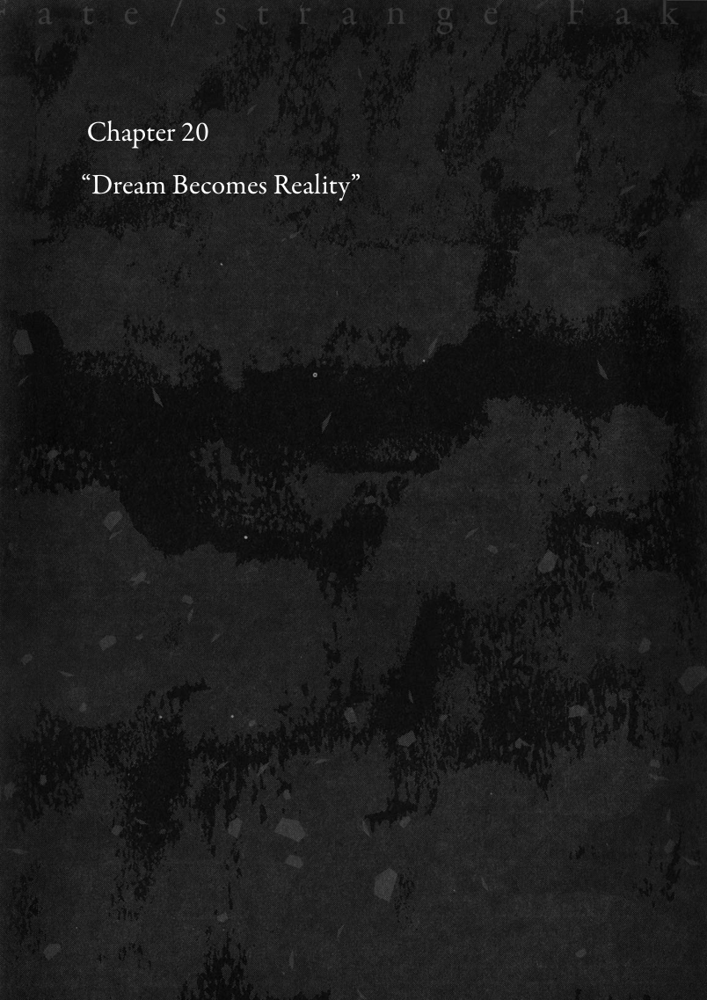
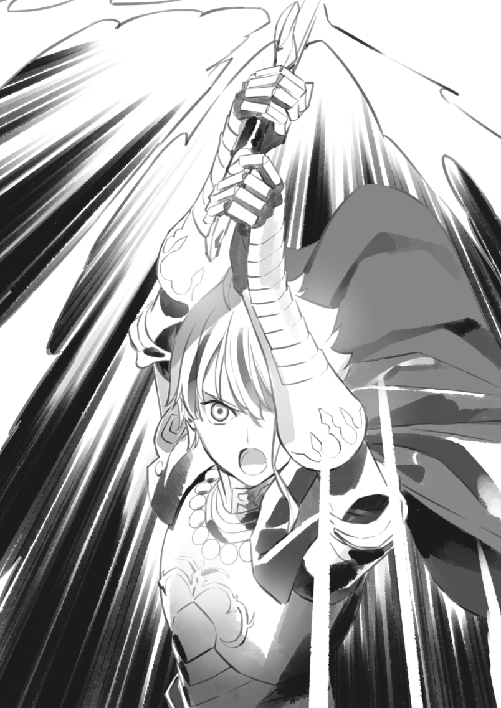

"O Sonho Torna-se Realidade"
Francesca Prelati se envolveu pela primeira vez com a Guerra do Santo Graal depois que uma organização americana lhe encomendou uma análise em pleno decorrer da Segunda Guerra Mundial.
Um membro da família Dioland, que já havia se infiltrado na Torre do Relógio, entrou na guerra e, embora tenha sido derrotado, o relatório resultante concluiu que a Guerra do Santo Graal era singular demais para ser apenas um ritual local do Extremo Oriente. Havia um plano em andamento para construir uma cidade num terreno desapropriado para o desenvolvimento místico do país. Depois do relatório sobre a terceira Guerra do Santo Graal, esse plano se transformou numa tentativa de recriar o ritual ali.
Para realizar investigações concretas em prol desse plano, reuniu-se um grupo de magos talentosos e sem vínculos com a Torre do Relógio, e Francesca acabou trabalhando com eles graças à recomendação de uma pessoa com quem ela nunca conseguia cortar laços.
"Vocês bombardearam Fuyuki do céu só para investigar. Isso é exagerar demais. Vão mesmo até esse ponto?" Francesca resmungara a princípio. Ela não estava nem um pouco entusiasmada. Mas, quando ela — ou melhor, ele, na época — observou de fato a Guerra do Santo Graal em Fuyuki, sua postura mudou por completo.
A Quarta Guerra do Santo Graal. Um evento de histórico duvidoso, que viu o assassinato brutal de um Lord da Torre do Relógio e a perda de vários recursos sem relação com o mundo da magia, como caças militares. A Santa Igreja teve um trabalho infernal para encobrir aquilo.
O "hobby" de Francesca era observar, por meio de sua vasta rede de informações, lugares onde coisas interessantes pareciam prestes a acontecer e então atirar essas informações em eventos que se desenrolavam em outros lugares para provocar caos. Mesmo entre os dados que ela — ou ele, dependendo do corpo — acumulou ao longo de muitos anos, aquele ritual do Extremo Oriente era excepcionalmente fora do comum.
Observava-se um Ghost Liner atrás do outro. Havia tramas envolvendo magos, usuários de magia e até a Santa Igreja. E havia também duas figuras de rosto "familiar".
Uma delas era a figura do rei que, diziam, fora guiado pelo mestre dos mestres dela, aquele homem-íncubo por quem os espíritos que lhe ensinaram magia haviam se interessado. Francesca nunca tivera nada a ver com ela, mas a vira nos sussurros lançados sobre a água por seus mestres.
Essa, no entanto, não tinha despertado em Francesca um interesse particular. Ela ficara surpresa que o ritual fosse capaz de invocar até mesmo a portadora da Espada Sagrada do Planeta. Como aquela existência desapareceria quando o ritual terminasse, não conseguira confirmar sequer se sua personalidade tinha sido reproduzida de fato.
Quando, porém, avistou por meio de seu feitiço de visão à distância seu outro conhecido, Gilles de Rais, o "nobre cavaleiro da Bretanha", Francesca ficou deslumbrada e partiu da Antártida para o Japão apenas com a roupa do corpo.
Largou todos os outros projetos e correu para a cena . . . mas pagou o preço por sua falta de preparo. Ao que tudo indicava, o Graal foi destruído antes que ela tivesse a chance de intervir. No fim, Francesca jamais conseguiu se encontrar cara a cara com sua amiga jurada.
Talvez também pesasse o fato de ela ter subestimado o poder do chefe da família Makiri e dos insetos que ele comandava.
Seus familiares provavelmente tinham sido deixados passar de propósito. Havia inúmeros insetos posicionados ao longo de sua rota, e Francesca acabou sendo forçada a abandonar o corpo que usava na época depois de ser interceptada por um demônio na forma de um velho.
"Ilusões não funcionam muito bem em insetos." "Se eu só tivesse tido mais tempo para me preparar, teria conseguido enganar a região inteira e me infiltrar desse jeito. . . ."
"Oh, Gilles, Gilles, espero que você tenha conseguido aproveitar a Guerra." Faldeus a flagrou resmungando isso antes de seguir rumo à Torre do Relógio.
Ela estava decidida a interferir na Quinta Guerra, mas uma série de fatores coincidiu para impedi-la.
Primeiro, Matō Zōgen, que a havia atrapalhado durante a Quarta Guerra, reforçou suas barreiras contra invasores, o que significava que ela não conseguia observar a Guerra de modo algum.
Segundo, o padre da Santa Igreja era extraordinariamente habilidoso em lidar com ameaças externas.
Terceiro, quando tentou investigar Fuyuki durante o período preparatório, sentiu a presença perturbadora de pelo menos sete Olhos Místicos voltados para a mesma linha e não pôde se aproximar da cidade descuidadamente.
A gota d'água foi o fato de ela estar, na época, no meio de uma fase em que seus corpos vinham sendo assassinados repetidas vezes por uma grande maga chamada Aozaki Tōko.
Como resultado, Francesca não soube como a Quinta Guerra do Santo Graal terminou. O resultado vazou, mas ela não conseguiu descobrir que tipo de "guerra" ocorrera em Fuyuki, nem que facções tiveram que destinos.
Mas aquilo já bastava. Francesca observou pacientemente o funcionamento do Graal, reuniu uma variedade de componentes, como um fragmento da Energia Mágica do Graal Maior que mal conseguiu obter antes do início da Quinta Guerra, ou a "lama" que escavou das ruínas do "desastre de Fuyuki" ocorrido durante a Quarta, e construiu um Santo Graal falso em Snowfield.
Mas um falso ainda era um falso. Sem ter como componente os Circuitos Mágicos completos e intactos de Justeaze, a fundadora da Guerra do Santo Graal, era impossível recriar com perfeição o Graal Maior. Não importava o quão perto chegasse: nunca passaria de uma imitação.
E, ainda assim . . . Espíritos Heroicos, Servos, Ghost Liners. Por algum milagre ou capricho, a terra sobre a qual a Guerra do Santo Graal falsa foi erguida chegou ao ponto de manifestar várias dessas "forças" conhecidas por muitos nomes.
Nesse caso, pensou Francesca, o resto seria apenas tentativa e erro, confiando na mais pura sorte.
Se repetisse aquilo milhares, dezenas de milhares de vezes, até a raça humana ser extinta, talvez um dia alcançasse tanto o resultado desejado por seus empregadores quanto o seu próprio desejo: a eliminação da Magia por meio do avanço da tecnologia humana.
Dava para dizer que Francesca Prelati era mais demônio do que maga, sem um pingo de apreço pela lógica.
Foi por isso que teve a ideia. Já que ia invocar Espíritos Heroicos, era melhor se divertir com eles o máximo possível.
E, naquele exato momento, ela estava radiante. Tinha ouvido dizer que, por alguma razão, a lendária portadora da Espada Sagrada se manifestara várias vezes na Guerra do Santo Graal de Fuyuki.
Nessa Guerra do Santo Graal falsa, surgiu no lugar dela um rei que idolatrava aquela heroína. Francesca Prelati ardia de vontade de macular essa adoração. Quando se roubava a luz de alguém tão radiante, o que, exatamente, restava? Só para descobrir isso, os Prelati continuavam a mergulhar nesse sonho. Por mais feio, lamentável ou miserável que o resultado acabasse sendo . . . pelo menos estavam decididos
a amá-lo como uma forma de humanidade.
O Passado, 1189, Oeste da França
"Ah, então você é desse tipo. Você gosta mesmo do Rei Arthur, não é?" perguntou o homem de roupa deslocada, mexendo ruidosamente na estranha carruagem sem cavalos sob a qual estava deitado.
Ricardo respondeu com um sorriso de menino. "Você está enganado, Saint-Germain! Eu não gosto só do Rei Arthur; gosto também dos Cavaleiros da Távola Redonda, e adoro as lendas de Carlos Magno! Ver o rei Beowulf matar Grendel faz meu peito estremecer, e já quis ir treinar na Terra das Sombras mais vezes do que consigo contar!"
"Não se esqueça de Alexandre, o Grande. Aposto que ele lutaria com você até a morte no campo de batalha com um sorriso no rosto."
"De verdade?! Seria uma honra! . . . Ainda assim, é verdade que, se eu fosse me devotar a alguma lenda, seria às canções do Rei Arthur, o primeiro rei do meu coração."
"Mesmo sendo traído por seu próprio sangue e derrubado no fim?" perguntou o homem, Saint-Germain, em tom sarcástico, pondo a cabeça para fora debaixo da carruagem.
"Claro", respondeu Ricardo, despreocupado. "Eu também gosto de sir Mordred, sabia? É um grande cavaleiro, aquele que matou o grande Rei Arthur. Aquele que encerra uma lenda merece ser uma lenda por mérito próprio."
"Oh, entendo. Suponho que você tenha razão", concordou Saint-Germain, observando ao redor com um sorriso enviesado.
Em meio às fileiras ordeiras de cavaleiros e soldados a pé, o vigarista, cuja posição equivalia à de um mago da corte, murmurou baixo demais para Ricardo ouvir:
"E é justamente por você ser assim . . . que está a caminho de matar o próprio pai."
A vida de Ricardo I, o "Coração de Leão", foi vivida em adoração ao Rei Arthur. Os episódios que demonstravam seu apego às lendas eram numerosos demais para enumerar e, deixando de lado sua disposição tempestuosa, não seria exagero dizer que o padrão chamado de "cavalaria" se nutriu dessas inúmeras histórias.
Ele frequentemente saía pessoalmente em busca de relíquias de heróis de eras passadas. Não há como saber se a Excalibur que se supõe ter descoberto em Glastonbury era real ou apenas uma miragem que
sua obsessão pelas lendas lhe mostrou.
Fosse qual fosse a lâmina em seu interior, porém . . . ao menos a bainha era genuína. Foi o que alguém contou à realeza e aos aristocratas da corte francesa vários séculos mais tarde.
Segundo essa história, Ricardo prestou homenagem à grande bainha que preservara a espada sagrada da corrosão do mundo, impondo sobre ela o mais poderoso dos selos e devolvendo-a, com as próprias mãos, a um lugar ligado ao Rei Arthur.
A história correu o mundo como mais um simples rumor, e então se passaram mais alguns séculos. . . .
O Presente, Um Mundo Isolado, Cruzamento Central
"Ei . . . Eles estão com outro olhar agora", disse um dos oficiais, sentindo suor frio escorrer pelas costas.
"Calma. Isso não muda o plano. Vamos procurar uma brecha enquanto reforçamos a defesa."
Vera era quem os mantinha coesos. Seu rosto permanecia calmo, mas até ela percebia o quão desesperadora era a situação.
"Uma brecha? É fácil falar . . ." Outro oficial pôs em palavras as ansiedades de Vera. "Mas existe mesmo algum lugar para correr?" Tudo o que conseguiam ver da cidade já havia sido corroído pela névoa negra. Enxames de ratos se espalhavam pelo chão enquanto corvos de asas negras cobriam o céu.
E os Cérberos, que até então tinham permanecido na defensiva, partiram para o ataque. O fato de os policiais ainda estarem intactos diante daquela ofensiva feroz provavelmente se devia ao fato de John ainda ser capaz de usar o "poder" que Caster lhe concedera para se defender com as próprias mãos, e ao fato de que os Cérberos e outras bestas demoníacas prestavam pouca atenção neles.
Os ataques das bestas demoníacas pareciam concentrar-se no Espírito Heroico Saber. Até então, seus movimentos tinham sido quase mecânicos, mas agora alguns vinham carregados de uma hostilidade óbvia.
"Alguma coisa aconteceu! Espero que a garota esteja bem!" Saber rechaçou as criaturas grotescas que o atacavam de todos os lados com a garra do Cérbero.
As presas das feras gigantescas se fecharam, em busca de uma abertura. Mandíbulas muito maiores do que o corpo inteiro dele se chocaram com uma velocidade tremenda, mas Saber desviou por um fio.
Mas Cérbero tinha três cabeças. Uma sequência de três guilhotinas mortais. Saber chutou uma presa grossa como um tronco para evitar a segunda e depois mudou de direção no ar para escapar da terceira fileira de mandíbulas.
Outro Cérbero, porém, aproveitou a chance para se aproximar por trás e arremessou o corpo de Saber longe com um golpe de garra.
". . .!" O corpo de Saber se chocou contra um prédio coberto de névoa negra. Estilhaços de vidro e concreto voaram em todas as direções.
"Saber!" gritou Ayaka. Isto está errado. O Saber está se movendo mais devagar do que o normal! Eu sabia! Ele ainda está ferido desde ontem à noite! Ayaka amaldiçoou a própria displicência. Sabia que Saber conseguira seguir desviando dos Fantasmas Nobres que o Espírito Heroico dourado disparava como uma metralhadora, mas seus movimentos estavam claramente mais duros do que tinham estado naquela hora.
Ele disse que tinha sido curado com magia, mas não devia ter conseguido se recuperar totalmente de ferimentos quase fatais.
Ayaka não entendia nada de magia. Não tinha compreendido de verdade, então assumira que ele tivesse sido curado por completo.
Agora que pensava nisso, Saber não soara exatamente como ele mesmo quando se oferecera para fazer o trabalho sujo, se fosse preciso. Será que era porque sabia que já não lhe restava muito tempo?
Ayaka emendou um pensamento negativo no outro enquanto corria entre a poeira rodopiante em direção ao prédio contra o qual Saber fora arremessado.
Mas a coisa em que os Cérberos, ou melhor, aquele "mundo", concentraram o olhar depois de Saber foi a fonte de Energia Mágica dele. Em outras palavras, Ayaka.
"O quê . . .?" Uma das feras titânicas fechou o cerco sobre Ayaka. Suas mandíbulas, no entanto, foram barradas por policiais que se interpuseram entre a fera e Ayaka
com Fantasmas Nobres em forma de escudo e alabarda.
"Não pare! Continue correndo!" "Por quê . . .?" Trégua ou não, ela ainda devia ser a inimiga deles. Então por que a salvariam? "Esse tipo de coisa é o nosso trabalho de verdade", respondeu um dos oficiais à pergunta que os olhos de Ayaka faziam. ". . . Obrigada!" Ayaka conseguiu arrancar uma resposta no último instante e continuou correndo para dentro do prédio. Lançou um breve olhar para trás . . . e viu os oficiais sendo massacrados pelos monstros. Alguns tinham sofrido ferimentos graves; outros estavam tombados no chão. Nos poucos segundos em que Saber estivera ausente, o equilíbrio ruíra. John e Vera ainda resistiam, mas, naquele ritmo, todos estariam mortos em questão de minutos.
Tendo visto aquilo, Ayaka subiu correndo as escadas rumo ao interior escuro do prédio, com lágrimas nos olhos, buscando o andar em que acreditava que Saber tivesse sido lançado.
Por que eu. . . ? Eu não consigo fazer nada. Eu nem sou uma dessas "Mestres", ou seja lá como se chamem. Eu nunca poderia ser uma . . . Não. Não, não, não. Não é que eu não pudesse. Eu escolhi não ser. Fugi de novo. Mas não sobrou mais lugar nenhum para eu fugir! Furiosa com a própria covardia, Ayaka simplesmente continuou correndo, ignorando os protestos dos músculos das pernas.
Ayaka sabia que, comparada a Espíritos Heroicos ou magos, ela não passava de uma fracota. Também sabia que era fraca até mesmo em comparação com outros humanos, e sabia por quê. Sexo e idade não tinham nada a ver com isso. Ayaka compreendia que diferenças como essas eram irrelevantes para o que significava força ali. A razão de ela ser fraca era simples. Eu nunca tentei ficar forte. . . . Nunca quis ficar forte. . . . Era tão, tão mais fácil fugir. E então . . . justamente quando Ayaka estava prestes a chegar ao andar em que imaginava que Saber tivesse caído, avistou uma figura vermelha na escada.
Ayaka prendeu a respiração. Aquele era um prédio comum.
Naturalmente, tinha elevador. Cada parte do corpo de Ayaka tremeu diante da "Chapeuzinho Vermelho". Era uma alucinação? Era um fantasma? Ayaka não sabia.
Estou com medo. Com medo, com medo, com medo, com medo, com medo, com medo. Não, não, não, não, não. Seus ossos estalaram. Suas entranhas se retorceram como se queimassem. O enjoo subiu do fundo da garganta.
Mas . . .
Mesmo assim, ela não parou.
". . . Saia do caminho." As pernas de Ayaka já estavam no limite, mas ela as forçou escada acima, um degrau de cada vez, enquanto articulações e fibras musculares gemiam.
Com lágrimas nos olhos, ela ergueu o olhar para a "Chapeuzinho Vermelho". "Se quiser, pode me matar ou me amaldiçoar. Tenho certeza de que você tem esse direito." Aquele mundo dentro da barreira havia se enchido até transbordar, num instante, de toda forma de morte. Como resultado, talvez essa atmosfera excessiva de morte tivesse entorpecido o medo que impulsionava Ayaka a continuar correndo.
"Eu tenho medo de você, mas . . ." "—" A única parte do rosto mal visível sob a sombra do capuz, a boca da Chapeuzinho Vermelho, se abriu, como se tentasse dizer alguma coisa a Ayaka.
Ayaka, porém, continuou avançando apesar disso e tentou passar direto por ela.
"Agora mesmo, eu tenho mais medo de fugir do Saber." No instante seguinte . . . a boca da Chapeuzinho Vermelho se moveu e sussurrou, numa voz que só Ayaka podia ouvir: ". . . _____." "O quê . . .?" Ayaka se virou apesar de si mesma, mas a Chapeuzinho Vermelho já não estava mais ali. Depois de um instante de hesitação, Ayaka levou as duas mãos ao rosto e se dirigiu para uma parede destruída em busca de Saber.
"Oh . . . Ora, você veio até aqui mesmo, Ayaka?" Saber estava ali. Estava de pé de forma majestosa, como quando ela o conhecera na casa de ópera. Ao contrário daquela vez, porém, estava coberto de sangue. Não tinha caído de cara no chão como fizera na igreja, mas parte da armadura estava rachada, provavelmente rasgada pelas garras de Cérbero, e sangue fresco escorria do talho.
"Saber . . .!" "Por favor, não me olhe assim. Isto não passa de um arranhão. . . ." "Nós já tivemos essa conversa três ou quatro vezes. Eu já me decidi, então cala a boca e escuta!" "Certamente." A visão do aspecto cadavérico de Ayaka fez Saber esquecer os próprios ferimentos e assentir por puro reflexo.
"Saber . . . você está hesitando em usar a minha Energia Mágica e se contendo, não está?" ". . ." "Eu não vou mais fugir de você nem da Guerra do Santo Graal. Eu decidi lutar ao seu lado! Só que acabei de decidir isso agora, então foi mal!"
"Ah, sim. . . . Certamente." Ayaka conseguiu, de alguma forma, a proeza de despejar um pedido de desculpas sincero em tom de bronca, e Saber respondeu com outro aceno reflexo.
Ayaka vinha pensando nisso havia dias, mas agora ela entendia. Entendia aonde a levaria continuar fugindo de tudo por medo. Aquela pergunta não fazia sentido diante da situação em que se encontrava. Aquele era justamente o lugar para onde ela fugira.
Se fosse encontrar alguma coisa no fim dessa fuga, teria de encontrá-la ali. "Eu nem vou reclamar se você acabar sugando toda a minha Energia Mágica e me matando! Quer dizer, eu vou reclamar, mas isso seria muito melhor do que morrer com você num lugar desses sem nem saber o que está acontecendo! Então eu vou fazer o que eu puder!"
Ayaka agarrou a mão de Saber e a pressionou contra uma das marcas parecidas com Selos de Comando em seu corpo enquanto ouvia os sons da batalha do lado de fora.
"Se você está disposto a me dar alguma coisa em troca da minha Energia Mágica . . . eu quero que me ensine a lutar. Não me importo se for só como atirar pedras. Se acha que eu vou atrapalhar, pode até ser como produzir mais Energia Mágica ou como usá-la!"
Saber baixou os olhos por um instante diante da expressão sincera de Ayaka e então respondeu com uma seriedade equivalente.
"Agradeço o sentimento, e você é forte. No entanto . . . agora, sou eu quem não consegue
responder a você."
"?" "Você se decidiu a lutar por mim, mas eu ainda não encontrei uma razão para buscar o Graal se isso significa arriscar minha vida, minha cavalaria e pisotear os desejos dos outros. Portanto, esta vida minha não é para vencer esta guerra. Devo usá-la para mantê-la segura. Até ontem, eu achava que podia equilibrar isso com a minha própria curiosidade . . . mas aquele sujeito espalhafatoso me ensinou o contrário."
Eu sabia, pensou Ayaka. O Saber realmente ficou ferido. E não só fisicamente. Sua luta com aquele Espírito Heroico dourado abriu uma fenda em seu coração.
Saber não tinha medo dos outros. A derrota certamente não o fizera temer que aquele herói dourado o matasse.
Até Ayaka conseguia entender isso, e duvidava que tivesse mudado. Mas, mesmo que não tivesse medo, sem um desejo pelo Graal, ele não tinha motivo para voltar seu coração leonino para a Guerra do Santo Graal.
Como resultado, ele devia ser incapaz de lutar com toda a paixão de antes. Ayaka conhecia Saber havia poucos dias, mas fora obrigada a aprender mais sobre seu temperamento do que gostaria.
"Portanto, não me importo se eu desaparecer. Eu a envolvi nisso, e a sua sobrevivência é o meu objetivo principal. Embora, idealmente, depois de garantir sua segurança, eu ainda queira uma chance de desafiar aquele rei dourado outra vez com o restante da minha Energia Mágica."
"Não importa qual seja o seu desejo! Eu nem ligaria se você quisesse vender o Graal por dinheiro! Você não disse que ia levar a música de volta com você para o céu ou para o 'Trono' ou seja lá onde for? Um capricho infantil desses já basta!"
Saber baixou os olhos de novo e mostrou um sorriso torto. ". . . Uma coisa é o Trono, mas não é no céu que você vai me encontrar." "?" "Sou um Espírito Heroico, apenas uma sombra gravada no mundo, então não conheço a verdade, mas, se existe um céu, então a minha alma deve estar . . . ardendo no purgatório até o dia em que a raça humana chegue ao fim."
". . .?" Ayaka ia perguntar o que ele queria dizer quando mais uma parte da parede do prédio desabou. "!" Os dois se viraram e viram uma fileira de três enormes bocas bestiais. Cérbero tinha crescido de novo enquanto eles não olhavam. Sua aparência lembrava a de uma fera tricéfala saída de um filme de monstros gigantes.
Plantas venenosas brotavam onde quer que gotas de sua baba tocassem o chão.
"Durmam. (Morram.)"
As três cabeças falaram em uníssono. Pareciam prestes a arrancar inteiro o cômodo com Saber e Ayaka dentro. Antes que qualquer um dos dois pudesse se mover, porém, um pequeno fragmento rolou entre eles e a fera.
"?" Ayaka ficou confusa. As três cabeças de Cérbero tinham congelado de repente no lugar. Todos os seis olhos da criatura estavam fixos no pequeno vulto que rolara pelo chão. Quando Ayaka percebeu o que era, não conseguiu conter a exclamação. Aquilo simplesmente destoava demais do perigo mortal em que estavam.
". . . Um biscoito. . . ?" Era um simples biscoito, com um doce aroma de mel, desses que se venderiam em qualquer supermercado.
Tudo caiu em silêncio, Cérbero incluído. "Capturar Cérbero foi esperto, mas foi um movimento ruim." Vozes alegres ecoaram. Definitivamente destoavam. "Quero dizer, a fraqueza dele é famosa demais!" O tom do garoto e da garota era de puro deleite, como o de uma plateia assistindo à situação crítica de Ayaka e dos outros como se fosse uma cena de um slasher.
Quando de fato apareceram, estavam mesmo mastigando biscoitos e chocolates comprados em loja como se fossem pipoca.
Abriu-se um rombo enorme no teto e, por ele, desceram duas figuras com um guarda-chuva aberto, como personagens saídos de um filme.
"Oi. Devo dizer prazer em conhecê-los? Sr. Coração de Leão e . . . não faço ideia de quem você seja, mas você tem uma Energia Mágica impressionante!"
A garota de vestido gothic lolita abriu um sorriso enquanto girava o guarda-chuva. Ao lado do guarda-chuva aberto rodopiando, um menino de traços parecidos fez uma reverência polida. ". . . Tenho muitas perguntas", disse Saber ao par, como se falasse em nome da desnorteada Ayaka, "mas antes me digam: por que vocês estão de guarda-chuva aberto dentro de um prédio?"
"Essa era mesmo a pergunta importante?" Ayaka franziu a testa quando a pergunta deixou claro que ele de modo nenhum estava falando por ela. A garota, porém, estufou o peito com orgulho, os olhos cintilando. "Fico feliz que tenha perguntado! Eu sabia que você era um verdadeiro achado!" "A resposta é simples", continuou o garoto por ela, abrindo bem os braços.
"Está prestes a chover aqui!"
No instante seguinte, uma enxurrada de pacotes de biscoito e doces começou a cair dentro do prédio, pintando o chão cinzento com uma torrente de cores vivas.
Era uma cena inacreditável, como saída de um conto de fadas ou de um gibi. Ayaka ficou sem palavras diante de uma paisagem desligada da realidade num sentido completamente diferente da atmosfera de morte que impregnava tudo até instantes antes.
Os pacotes de doces que caíam no lugar de gotas de chuva começaram a ficar maiores. Montanhas de guloseimas foram se empilhando em direção ao teto alto do cômodo como montes de carcaças de carros num ferro-velho.
E a coisa mais surpreendente de todas foi que os Cérberos, imóveis, fungaram alto e em seguida começaram imediatamente a devorar os doces agora gigantescos junto com as embalagens.
"Quem são vocês . . . ?" perguntou Ayaka, postada ao lado de Saber e sem conseguir processar a situação.
"Sabe, nós é que queríamos perguntar a mesma coisa", respondeu a garota, desviando com o guarda-chuva a chuva de doces. "Estamos nos perguntando de onde Filia conseguiu tirar alguém como você."
"! Vocês conhecem ela?! Onde ela está agora?!" A mulher branca que a conduzira à força até aquela cidade. Ayaka redobrou a cautela ao saber que os dois tinham alguma ligação com ela. Eles, porém, responderam à pergunta dela com uma afirmação que não fazia o menor sentido.
"Ah ha ha! Eu acho que ela já não está em lugar nenhum. Mas o corpo ainda está por aí! É melhor tomar cuidado para não acabar falando com ela por engano. Ela pode transformar você numa pedra preciosa por insolente ou malvestida ou algo assim!"
"?" "Não esquenta com isso. Eu sou a Francesca. Este é o Francois. Nesta Guerra do Santo Graal, nós somos a facção da True Caster, os mentores, os banqueiros das apostas e os criadores de confusão, tudo ao mesmo tempo. . . . Isso já basta para você se situar? Basta, não basta?"
"?!" Ayaka ficou ainda mais confusa, mas Saber assentiu. "Entendo. Não entendo absolutamente nada, mas agradeço por terem nos resgatado. Eu tinha ouvido dizer que Cérbero gosta de bolos de mel, mas não tinha nenhum à mão."
"É loucura, né? Todo esse tempo as pessoas continuaram contando histórias sobre um cão de guarda que deixa criminosos passarem em troca de doces", gargalhou Francesca, olhando para fora.
Ayaka levou um susto e virou o rosto para observar o que acontecia enquanto mantinha um olho cauteloso
nos Cérberos devorando doces.
Lá fora, a mesma chuva de guloseimas caía, e cada Cérbero estava colado a uma montanha de biscoitos.
"Oh, eu quase me esqueci. Não precisam agradecer." "Afinal, estamos aqui para macular vocês." O par misterioso anunciou isso com sorrisos alegres. "O quê?" Ayaka franziu a testa, observando para ver o que pretendiam fazer. "Oh?" disse Francesca, fitando Ayaka de volta. "Você ficou bem mais forte desde que Cashura quase matou você no primeiro dia."
". . . Cashura . . . Vocês são amigos daquele cara da casa de ópera?!" "Acertou. Naquela época, sua cara era de quem não conseguia nem se dar ao trabalho de continuar vivendo. Será que ser arrastada por um herói como o sr. Coração de Leão aqui deu uma endurecida em você? Ou você é uma raposinha que ficou convencida só porque se encostou em alguém forte? Qual das duas?"
"Ma—" Ayaka gaguejou diante da mudança brusca de assunto. Ela não tinha como afirmar com certeza que não fosse a segunda.
Saber, porém, expressou em seu lugar sua opinião honesta, sem adornos. "O que você quer dizer com isso? Ayaka já era forte desde o começo, e é natural ficar convencido quando se está perto de alguém em quem se pode confiar, não importa se você é forte ou fraco. Além disso, embora Ayaka tenha, de fato, olhos imponentes como os de uma raposa, ela não perturba jardins nem lavouras, nem engana as pessoas fingindo ser um gato."
"Você consegue dizer isso de coração? Excelente! Eu sabia que você era um verdadeiro achado!" "Entendo, entendo. Realmente é um rei e tanto! Ele age inteiramente segundo os próprios princípios do momento!" O sarcasmo de Francesca errou o alvo, mas, por algum motivo, os dois pareciam satisfeitos. Voltaram a atenção para Ayaka e, movendo-se como se dançassem e rodopiassem, disseram: "Sortuda. Estou com inveja. Ayaka, né?" "Você deu de cara com um bom rei! Não admira que esteja ficando mais forte! Não admira que consiga confiar nele!"
"Por isso vamos pedir desculpas enquanto ainda dá tempo. Foi mal!" "Bom, também não ligamos se você guardar rancor. Se não guardar, vamos ser amigas, tá? Ah, e não vamos machucar os corpos de vocês, então relaxa. Iupiii!"
Depois daquela sequência de provocações, Ayaka não conseguiu evitar se irritar e começou a dizer alguma coisa ao par.
"Ei, de que diabos vocês estão falan—"
No instante seguinte, porém . . . "Nós só vamos pisotear um pouquinho a adoração de Sua Majestade." Francesca brandiu o guarda-chuva, e o mundo se virou do avesso.
Era um belo castelo. Não era policiado como uma atração turística, mas as portas próximas e os jardins visíveis mais ao fundo mostravam sinais de manutenção cuidadosa. As paredes de pedra marcadas pelo tempo lhe conferiam um ar de majestade solene e se harmonizavam de forma fantástica com sua localização no coração da floresta.
". . . O-Q-Quê?" O grito que escapou da boca de Ayaka saiu agudo e trêmulo. Ela sabia que, segundos antes, estavam dentro de um prédio. Agora, porém, o concreto frio, os cacos de vidro e, acima de tudo, as montanhas de doces e os monstros que se empanturravam com elas tinham desaparecido sem deixar vestígio.
Era como se nada daquilo tivesse existido em primeiro lugar. Mas a voz de Ayaka não saiu estridente porque a paisagem à sua volta havia sido trocada. Afinal, ela acabara de ver o mundo se virar do avesso. Então por que seu pulso disparava e seu corpo inteiro se encharcava de suor? Porque ela reconhecia aquela paisagem. "Sem chance. Isto é . . . o castelo de Fuyuki. . . ." "Onde?" Ayaka se assustou com a voz ao seu lado e se virou. Encontrou Saber exatamente na mesma posição em que ele estivera até um instante antes. "! . . . Ainda bem! Você está bem?!" "Sim, mas estou surpreso. Isto aqui é . . . ainda mais incrível do que o 'projection mapping' que aquele patife do Saint-Germain me mostrou. É uma ilusão. Está enganando por completo nossa percepção, não só o que vemos, mas até o cheiro da brisa e a temperatura do solo."
"Uma ilusão . . .? Não teletransporte, nem nada assim?" "Não, duvido que tenhamos ido a qualquer lugar fisicamente. Os policiais não estão aqui, então devem estar enganando nossos sentidos, não o espaço em si. Meu companheiro mago entende bastante desse tipo de coisa."
"Ah, é mesmo? Fiquei interessado nesse seu amigo mago." Ayaka ouviu a voz do garoto que se apresentara como Francois e olhou em volta. Mas, embora pudesse ouvir a voz dele, ele não estava em parte alguma. A seguir, veio a provocação de Francesca. "Droga. Eu queria fazer vocês acharem que era teletransporte e me divertir um pouco. Que decepção." "Oh, ainda assim é um feito e tanto. Certamente eu nunca vi, em vida, uma ilusão desse calibre. Estou impressionado. Que tal ser meu mago da corte? Em tese, isso é trabalho do Saint-Germain,
mas eu o chamei e ele não atendeu, então eu poderia nomear você como substituto dele."
". . . Ei, eu achei que meus ouvidos estivessem me enganando, mas continuo escutando um nome de que eu não gosto." "Eu também. Sabe, esse rei realmente parece o tipo exato que aquele vigarista degenerado e imprestável visitaria."
Francesca e Francois soavam visivelmente menos contentes do que instantes antes. "Oh, eu não iria tão longe", prosseguiu Saber, em tom direto. "Na pior das hipóteses, ele é o aristocratazinho desocupado mais esquisito que existe."
"Isso não é ainda pior?" Ayaka, que tinha visto "Saint-Germain" em seus sonhos, preferiu não insistir mais nesse ponto, mas aquilo aliviou seus nervos o bastante para que pensasse com calma.
"Entendi. . . . E por que vocês estão me mostrando uma alucinação da minha cidade natal?" "Hã? Ah, então você é de Fuyuki." "Hã?" Como eles pareciam conhecer Filia, Ayaka tinha assumido que a ilusão fosse dirigida a ela, mas aparentemente não era isso.
Se era assim, por que Fuyuki? Enquanto Ayaka se perguntava isso, uma mudança ocorreu atrás dela. Assim que ouviu o som de algo gigantesco se aproximando, "aquilo" passou por Ayaka e Saber, atropelando a floresta com um ribombar de trovão.
A coisa que avançava em linha reta para as grandes portas que levavam ao castelo era uma carroça puxada por grandes bois.
"Carroça" era a única palavra que Ayaka conseguia usar, mas Ricardo reconheceu de imediato o que era.
"Aquilo era . . . uma quadriga? Bois cercados de relâmpagos . . . Aqueles poderiam ser os bois divinos?! Então aquilo deve ser o rei Gordias. Não. . . ."
Saber, que era apaixonado por inúmeras histórias heroicas, percebeu instantaneamente o que era aquela quadriga e quem devia conduzi-la.
Dois homens estavam sobre a quadriga que correra por antigos campos de batalha. "Eu não acredito. . . . Saint-Germain me disse que ele era muito maior do que as lendas afirmam, mas achei que estivesse exagerando. . . ."
"Você o reconhece?" "Sim. . . . Se eu estiver certo . . . aquele é o conquistador que começou na Macedônia e foi dominar o continente, Alexandre, o Grande. . . !"
Alexandre, o Grande? Acho que já ouvi falar. . . . Ayaka não sabia muito sobre heróis lendários. Só tinha consciência de Alexandre, assim como
Ricardo Coração de Leão, como um nome que já ouvira em algum momento. A visão de Saber sorrindo com um encanto infantil, porém, deixava claro que ele era uma figura histórica, um herói que vivera muito antes até de Saber.
Então ele também é um Servo. . . ? Ayaka sentira uma presença extraordinária vindo do homem ruivo, mas a lembrança do jovem ao lado dele, gritão e nervoso, lhe trazia um pouco de alívio.
Talvez fosse simpatia, porque ela percebia que o rapaz de cabelo preto e rosto infantil era, como ela, "nada parecido com um mago".
Uma Cidade Isolada, Crystal Hill, Último Andar
"Você disse que está chovendo pacotes de doces . . . ?" A voz confusa de El-Melloi II ecoou pelo alto-falante do celular. Ele ouvira de Flat o que estava acontecendo, mas captou a situação depressa e opinou:
"Entendo. . . . Cérbero é um elemento estranho àquele submundo sem rosto. Devem ter se aproveitado das características dele. . . . Ainda assim, qualquer que tenha sido a escola de magia empregada, seria preciso um mago de altíssimo nível para provocar um fenômeno tão absurdo numa área tão vasta. . . . Há uma grande possibilidade de estarmos lidando com um Servo."
Em contraste com a análise calma de El-Melloi II, o duplo de Jester, com o rosto contorcido, berrava de raiva. "Ilusionistas?! Malditos sejam! Isso não é da conta deles!" Aquela besta divina deve se aproximar mais de sua força original se consumir vários mortos, ponderou Jester consigo mesmo. Depende dos recursos de Energia Mágica disponíveis nesse campo ritual, mas, se eu der sorte, suas capacidades de combate podem se igualar às de um Servo de alta classe. . . .
Os cantos de sua boca voltaram a se erguer. "Depois de todo esse trabalho para montar a mesa, suponho que eu mesmo vou dar uma mãozinha. Só um pouquinho."
"O que você está tramando, demônio?!" berrou Assassin enquanto cortava as grotesqueries que haviam entrado pelas janelas.
"Nada muito elaborado. Para começar, só vou assassinar todos os tiras naquele cruzamento lá embaixo e
enfiá-los na barriga de Cérbero no lugar de todos esses doces."
"Eu não vou permitir . . . Ngh . . ." Assassin se lançou sobre Jester, mas as incontáveis grotesqueries negras e esfumaçadas bloquearam seu caminho. "Oh, parece que essas coisas, na verdade este mundo inteiro, estão mirando primeiro os Servos. Tome cuidado. E o mesmo vale para o notório assassino ali", acrescentou Jester, olhando para o relógio de pulso de Flat. Havia em sua voz algo parecido com respeito e afeição, mas Jack foi o único a perceber isso.
". . . Agradeço o aviso." Qual é o próximo passo, Flat? Dá para fazer? Jack chamou Flat telepaticamente, estalando a língua mentalmente por ter sido descoberto.
Hum. Já estou quase lá.
Jester, que não fazia ideia do que Berserker e seu Mestre diziam um ao outro por telepatia, continuou provocando Assassin com um êxtase estampado no rosto.
"Hii hii. Isso vai te incomodar se eu matar aqueles tiras? Você mesma lutou com eles lá na delegacia, não foi? Então por que tentar me impedir de me divertir um pouco com a vida deles? Não parece que seu problema seja eu fortalecer Cérbero."
". . . Eu só não vou deixar você fazer o que quer. Só isso." "Não, eu acho que não! Você descobriu que aqueles tiras estão tentando proteger Kuruoka Tsubaki, e agora passou a ter algum respeito por eles, mesmo que sejam seus inimigos. Estou errado? Sim, eu sei. Eu sei tudo sobre você. Você, por outro lado, ainda não entende os magos."
"Silêncio!" Ela arremessou uma adaga oculta, mas a lâmina simplesmente atravessou o corpo de Jester como antes, servindo apenas para reconfirmar que ali não estava o corpo principal dele.
"Magos são os maiores pragmatistas que existem. No fim das contas, eles vão escolher matar Kuruoka Tsubaki. Mas essa é a escolha certa, Assassin. Este mundo-barreira está fora de controle e, em pouco tempo, vai se espalhar para fora da barreira . . . até a Snowfield real! Qualquer herói que esteja do lado da humanidade deveria escolher a opção com o menor número de sacrifícios e rápido! Sacrificar uma única garota pode salvar oitocentas mil pessoas, talvez até a raça humana inteira!
"Sim", continuou o duplo de Jester, alegre, "aquele mercenário que chamou a sua atenção talvez mate a pequena Tsubaki antes que qualquer outra pessoa tenha a chance! Isso também tem seu charme! Eu adoraria ver você tomada pela raiva e pelo desespero, traída pelo homem em quem confiou!"
". . ." O olhar assassino de Assassin parecia dizer que ela já lhe demonstrava raiva suficiente enquanto arremessava pela janela quebrada a última grotesqueria agarrada ao seu corpo.
A silenciosa e enfurecida Assassin e o loquaz hematófago, tomado de alegria, se encaravam. Os dois estavam quase mergulhados em um mundo só deles.
Hanza, porém, ignorou o clima e quebrou o silêncio. "Ei, cadáver." ". . . O quê, executor? Não se meta. Está ficando bom agora." "Lá na delegacia, você disse que negaria a ordem humana", prosseguiu Hanza, apesar da irritação óbvia de Jester. "Que os Apóstolos Mortos existem para profanar a história humana."
"? E daí? Uma coisa tão óbvia assim deveria ser conhecimento comum para um executor como você." "Essa Assassin faz parte da história humana. Você não vai negá-la? Você a está profanando, mas esse desprezo não vem da negação. Você está tentando maculá-la com esse desejo retorcido seu porque foi enfeitiçado por ela, porque não conseguiu negá-la. Você está tentando corrompê-la. Estou errado?"
". . . Onde você quer chegar?" Jester apagou qualquer traço de expressão do rosto. Hanza ignorou a pergunta e mudou de assunto friamente.
"Aliás, eu te disse antes que derrubar um Apóstolo Morto de alto nível exige armas consagradas, um usuário de singularidade ou um mago de alto nível . . . lembra?"
"E daí? Você está ganhando tempo para quê? Quem está sem tempo são vo—" Uma Black Key atravessou o duplo de Jester. Assim que ela se cravou na parede atrás dele, Hanza disse: "Minhas armas consagradas não alcançam seu corpo principal enquanto ele não está aqui. . . ." "?"
"Mas, felizmente . . . eu tenho um mago de alto nível para me ajudar com isso, Dorothea."
"—" Por um instante, o tempo parou para Jester. Flat se aproveitou desse lapso momentâneo e ativou sua magia. "Iniciar interferência!" No instante seguinte, a Energia Mágica percorreu o cômodo em todas as direções, refletida pelos Artefatos Místicos das freiras escondidas em posições dispersas, e criou um fluxo simplificado de Energia Mágica.
Ele terminou por se concentrar na Black Key que Hanza havia lançado, e o feitiço foi ativado.
"Gah?! . . . Qu . . . Gwaaah!"
Num instante, Jester estremeceu da cabeça aos pés. Era para ser apenas um duplo, mas gemeu com uma expressão de pura agonia no rosto.
"?!" Assassin foi quem se confundiu. Não por causa do feitiço em si, nem porque ele realmente fosse capaz de ferir Jester. No momento em que o padre chamou Jester de "Dorothea", o hematófago tirou completamente a atenção dela e a substituiu por um choque indisfarçável.
Jester caiu de joelhos e lançou a Hanza um olhar injetado de sangue. "Maldito . . . O que você fez . . .?" "Ah . . . Flat, explica para a gente." "Certo! Você é um duplo, então eu só segui as correntes de Energia Mágica e ataquei o seu corpo verdadeiro!"
"Impossível", cuspiu Jester para o despreocupado Flat, o rosto ainda contorcido de dor. "Meus duplos não são . . . comuns."
"Ah, sim, eu sei! Você prepara uma alma, ou talvez eu devesse chamar de núcleo, para cada um deles e se transforma vestindo-os no corpo verdadeiro como se fossem Artefatos Místicos, certo? Então você também faz cada duplo pensar e agir de forma independente, certo? Aí vai trocando entre eles de um jeito complicado enquanto, na prática, faz um jamming, ou algo parecido, para confundir a gente, e . . . Cara, foi difícil descobrir o padrão! Levou um tempo, mas foi muito divertido!"
"Você . . . percebeu isso? Em tão pouco tempo . . .?" A consternação superou a dor no rosto de Jester. "Quem diabos é você? Nenhum mago deveria conseguir . . . Merda. Primeiro aquele mercenário sabia das minhas transformações, agora isto. . . . Acho que não devia esperar que uma Guerra do Santo Graal fosse ser fácil. . . ."
Se o duplo está sofrendo tanto quanto parece, pensou Hanza, então talvez o corpo principal esteja imobilizado a esta altura.
Ele estava curioso para saber que tipo de feitiço Flat enviara ao corpo principal, mas não era hora de perguntas. Guardou o silêncio e observou.
Enquanto fazia isso, Jester voltou a atenção para ele. "Mas isso não importa. . . . O que importa agora é você, padre." "O que foi que eu fiz? É uma honra conseguir uma reação tão chocada só por chamar você pelo nome. Ah, e você não precisa mais esconder: estava começando a se achar um pouquinho, não estava?"
"Não se faça de idiota!" rugiu Jester, com a voz profundamente tingida de ódio e agitação. "Seu desgraçado . . . Como você soube . . .?!"
"Então aquela informação era legítima", respondeu Hanza com um suspiro. "Será que vou ter de agradecer oficialmente por isso? . . . Não pegaria bem, considerando a minha posição."
". . .?" Jester pareceu confuso. No instante seguinte, porém, outra voz tomou o quarto.
"Não necessitamos da sua gratidão, nosso amargo inimigo."
A voz vinha do bolso da batina de Hanza. Ele enfiou a mão ali e puxou um celular. Não era o telefone ligado a um Lord da Torre do Relógio; era o telefone particular de Hanza. Devia estar o tempo todo em uma chamada no viva-voz, e o interlocutor cuja voz saía dele devia ter permanecido em silêncio até então.
O dono daquela voz, elegante mas carregada de uma profundidade avassaladora, declarou por que decidira colaborar com Hanza.
"Eu apenas investi em um descendente de um velho amigo, não em você." "Essa voz . . ." Um turbilhão de expressões atravessou o rosto de Jester. Confusão, agitação, raiva . . . e então desespero. "Em compensação, eu peço o descarte de um resíduo. Só isso. Você não tem motivo para me agradecer."
Sentindo um suor frio lhe brotar na mente diante daquela "voz" que não lhe dava a menor atenção, Jester não conseguiu evitar murmurar:
"Por quê . . .?" "Deixe-me apresentá-lo", explicou Hanza friamente, como se derramasse sal sobre a ferida. "Este é o 'mago de alto nível' que concordou em me ajudar."
"Eu não acredito. . . . Por que você faria isso . . .?!" gemeu Jester, com a dor percorrendo cada centímetro do corpo e o rosto uma máscara de confusão. "Oh, é simples!" respondeu Flat, sem um pingo de tensão no rosto. "O quê . . .?" "Eu pensei que um hematófago forte como você devia ser bem famoso entre os outros hematófagos, então achei melhor perguntar para um que eu conheço!"
". . . Hã?" Jester soltou uma exclamação estupefata. O tom de Flat era tão leve que ele chegou a esquecer a própria dor.
"E só tinha um hematófago com quem eu já tinha trocado número de telefone." Dando um joinha, encantado por seu palpite ter sido correto, Flat anunciou o
nome da pessoa do outro lado da ligação.
"E . . . bingo! Eu sabia que o sr. Van-Fem ia saber quem você era!"
Ao Mesmo Tempo, Fuyuki (Ilusão)
"? . . . O que pode ter sido isso? Tive a impressão de ter sentido alguma coisa desagradável." "Será que não foi só imaginação sua?" comentou Prelati, ao lado da confusa Francesca, enquanto enchia a cara de doces.
Os dois haviam ativado duas ilusões dentro do mundo-barreira de Kuruoka Tsubaki usando o Fantasma Nobre Grand Illusion.
Primeiro, enganaram o próprio mundo-barreira para prender Saber e Ayaka num espaço isolado. Segundo, lançaram uma ilusão para enganar os cinco sentidos de Saber e Ayaka. No momento, os dois viam uma visão de Fuyuki. Era como se estivessem equipados com um VR da cabeça aos pés.
Os Prelati tagarelavam felizes enquanto observavam Saber e Ayaka em Fuyuki por meio de um espelho. "Vamos lá! O que você gosta de comer vendo filme, pipoca ou churros? Seja o que for, é melhor já deixar pronto! Rosquinhas e cachorro-quente também são ótimas escolhas! Você não concorda, eu (Francois)?"
"Agora você está só se exibindo, eu (Francesca). Você sabe que nós não tínhamos nada disso quando eu morri."
"Ouvi dizer que pipoca existe há muito mais tempo do que nós. Pelo menos neste continente." "Tá brincando! Isso não seria ainda da Era dos Deuses? Pipoca é incrível! Até divina!"
"Essa tal de 'pipoca' parece impressionante. . . . Eu gostaria de provar qualquer prato com uma história dessas." Saber engoliu em seco para conter a água na boca enquanto curava a ferida no abdômen com a magia de cura de sua "companheira".
"Eu pago quanto você quiser comer se a gente conseguir sair daqui." Ayaka já tinha desistido de ficar apontando as obviedades para Saber e observava o entorno. O grande homem ruivo e o jovem de cabelo preto que parecia ser seu Mestre,
que haviam avançado castelo adentro, ainda não davam sinal de surgir de volta pela porta que tinham arrebentado.
Como até as flores ali perto tinham parado de balançar, Francesca e Francois deviam ter pausado sua ilusão.
"Ah, fazer o quê", veio de novo uma voz do alto. "Talvez seja melhor vocês pularem os lanches e se concentrarem! Quero dizer, enquanto estavam vivos, nunca teriam tido a chance de assistir a um espetáculo desses!"
"Oh? Mal posso esperar! Você vai me fazer lutar contra Alexandre, o Grande, dentro dessa ilusão?"
"Isso também seria divertido, mas perde muito do impacto quando você percebe que é uma ilusão. Claro, eu consigo garantir uma apresentação ainda mais divertida. Afinal, a ideia toda é mostrar para você alguma coisa que nunca viu antes."
À medida que a voz de Francesca falava, a paisagem voltou a se mover. Depois de uma curta espera, o gigantesco ruivo surgiu da grande porta arrebentada com um grande barril sobre o ombro.
Depois dele veio o jovem, que de fato parecia nervoso. Outras figuras vieram em seguida. "Aquela é . . . a Filia?!" exclamou Ayaka, sem conseguir evitar. "Não, ela parece um pouco diferente. . . ." Uma delas era uma bela mulher com o mesmo cabelo branco como neve que balançava como o de Filia. Ao lado dela vinha uma mulher menor, de expressão severa, vestida com uma cota de placas prateada sobre um vestido azul. "? Quem é ela? . . . Parece um Espírito Heroico, mas . . . uma cavaleira . . . talvez Joana d'Arc?" Ayaka virou-se para perguntar a Saber, sugerindo um nome arrancado de algum canto da memória.
"O quê . . .?" Ela arfou sem querer. O sorriso habitual e despreocupado de Saber desaparecera. Em seu lugar havia puro assombro, algo tão absoluto que excluía qualquer outra emoção, como se ele estivesse testemunhando o começo do fim do mundo.
". . . Isto é . . . um sonho?" "Não, é uma ilusão. Você disse . . . Hã? Você . . . conhece ela?" Não me diga que é esposa, irmã, filha ou algo assim. . . . Ayaka se preocupou com a possibilidade de aquela ser alguém próximo a ele. Saber apenas moveu levemente a cabeça de um lado para o outro, sem tirar os olhos da mulher.
"Não, nunca a vi antes." "? Como assim?" "Espere", conseguiu responder o aturdido Saber à confusa Ayaka. "Estou conferindo com meus companheiros. . . . Ah . . . Não posso acreditar. Ah. . . ."
Saber ficou imóvel, cerrando os punhos. "Só existem duas razões para eu ainda estar de pé agora, em vez de ajoelhado", disse a
Ayaka.
"Ajoelhado por quê. . . ?" "Primeiro, por mais falho que eu seja, ainda sou um rei. Não seria justo com o povo que me aclamou se eu me dobrasse tão facilmente."
Ayaka não conseguia dizer se Saber falava com calma ou não. No instante seguinte, porém, decidiu que não.
"Segundo . . . eu não quero tirar os olhos nem por um segundo da lenda que passei a vida inteira perseguindo."
Ele não queria nem mesmo baixar o olhar pelo tempo necessário para se ajoelhar. A atitude de Saber disse a Ayaka quem era a garota de azul e prata. Disse, mas ela teve dificuldade em aceitar. Até onde conseguia se lembrar, aquele herói, cujo nome até ela conhecia, deveria ser um homem. Ainda assim, Ayaka não conseguiu pensar em nenhuma outra resposta e acabou pronunciando o nome em voz alta.
"Não me diga . . . que aquela é o Rei Arthur . . .?"
O herói central das lendas da Távola Redonda que a mãe de Ricardo lhe contava tantas vezes no sonho de Ayaka e que Saber chamara de "o primeiro rei do meu coração".
Não era fácil para Ayaka acreditar, mas ela conseguia sentir a majestade daquela mulher, e ela exalava uma qualidade que não se deixava apagar nem pela imponência de Alexandre, o Grande, andando à sua frente.
"Hã? Mas ela é uma garota. . . . Por quê?" "Artoria Pendragon", soou do céu uma voz que só Ayaka e Saber podiam ouvir, como se respondesse à pergunta dela. "Esse é o verdadeiro nome do Rei Arthur, sabia? Só não vá escrever isso numa prova de história, porque você não vai ganhar ponto nenhum."
"Será que isto é. . . ?" "Isso mesmo. Uma parte da Guerra do Santo Graal que aconteceu em Fuyuki. Só que foi há uns quinze anos. Cara, você não imagina a sorte que eu tive! Sabe, aquela quadriga de relâmpagos por acaso quebrou as barreiras do castelo naquela época. Eu consegui ver três reis reunidos de uma vez!"
"Três?" Isso significava que mais um rei ainda apareceria? Ayaka só teve tempo de se perguntar isso antes que o último rei surgisse diante do Rei Arthur e de Alexandre, o Grande, com um ar de evidente aborrecimento.
". . .!" Era o herói dourado que derrotara Saber na igreja.
"Ah ha ha! Não tenha medo!" riu Francesca diante da cautela de Ayaka. "Eu só estou recriando cenas que os meus familiares viram!"
"Para quê? . . . Por que vocês estão fazendo isso?!" Ayaka lançou um olhar furioso ao céu, e as vozes do garoto e da garota responderam. "Nós só queremos mostrar." "Isso! E depois queremos ver como Sua Majestade reage! É o que se chama fifty-fifty! Uma relação win-win!"
"Vamos explicar por respeito ao Coração de Leão, tão popular entre o povo. Você vai ficar sabendo como é de verdade o grande 'Rei Arthur', mais famoso que o Coração de Leão e, acima de tudo, o esteio mental dele e a base da sua cavalaria."
Por um instante, um ruído atravessou o mundo. A paisagem se embaralhou de um modo que fez Ayaka imaginar um zumbido de estática, e o mundo foi instantaneamente repintado.
Não. Continuou sendo repintado. Houve uma visão da grande ponte de Fuyuki. Houve uma visão do Rei Arthur lutando contra um lanceiro no porto. Houve uma visão de Espíritos Heroicos combatendo um monstro gigantesco no rio e um cavaleiro bizarro fundido a um caça.
Houve a visão de um mago metralhando a tiros um homem em cadeira de rodas. Houve a visão de um hotel desabando. Cenas fantásticas ambientadas em paisagens que Ayaka reconhecia iam passando em sequência a cada poucos segundos.
Mas nenhum dos humanos ou Espíritos Heroicos percebia Ayaka nem Ricardo. Algumas figuras chegavam a atravessá-los.
Eles provavelmente eram, de fato, apenas "espectadores", incapazes de interferir ou de ser interferidos. A mudança vertiginosa das paisagens apenas deixava Ayaka inquieta. Entre as cenas havia vislumbres da região de Kurokizaka, que ela não queria ver. E por um breve instante, bem no canto do olho, ela viu os Apartamentos Semina. Só esse vislumbre já bastou para fazer Ayaka sentir, em alucinação, que seu coração estava sendo esmagado, e sua respiração começou a sair áspera por conta própria.
Justo quando abaixou o olhar por instinto, a voz de Francesca ecoou. "Aquilo foi só a prévia! Vocês não adoram prévias?! Muito bem, hora de apresentar o filme principal! É um registro fragmentado da Quarta Guerra . . . mas nós editamos tudo num belo documentário para vocês apreciarem! Tem spoiler, aliás, e o final não é feliz!"
As imagens mudaram de novo e, dessa vez, permaneceram por mais do que alguns segundos. A mulher tão parecida com Filia descia de um avião no aeroporto,
acompanhada por um Rei Arthur vestido de preto.
Era como a cena de abertura de um filme. Letras flutuaram no ar para que Ayaka pudesse vê-las. Era um logotipo charmoso que dizia "Editor: Francesca Prelati", em japonês e em inglês. O mau gosto fez a bochecha de Ayaka tremer, mas um olhar de relance ao lado mostrou que Saber continuava sem expressão, acompanhando a cena com toda a atenção.
Saber . . . aquela garota é mesmo o Rei Arthur que você admira tanto. . . ? A tensão do Saber contaminou Ayaka, e ela decidiu não desviar os olhos do mundo ilusório.
"Espero que goste de ver as verdadeiras cores do seu querido Rei Arthur", anunciou Francois maliciosamente, talvez percebendo que já tinha fisgado sua plateia, enquanto fazia soar na ilusão o ruído artificial de um sino de intervalo.
"E do momento em que a Mestre dela a traiu e esmagou o desejo dela sob os pés."
Um Mundo Isolado, Crystal Hill, Último Andar
"Foi fascinante ouvir tudo isso, Flat." Flat respondeu à voz que saía do celular de Hanza com um suspiro de alívio. "Ainda bem! Como o senhor não falava nada mesmo estando no viva-voz, achei que talvez estivesse entediado. . . ."
"Além disso, ainda pude ouvir uma aula de um Lord da Torre do Relógio. Foi um negócio sem desvantagens."
"Espera, Flat", soou a voz do próprio Lord pelo celular sobre o altar. "De quem era aquela voz? A não ser que meus ouvidos estejam me enganando, ouvi um nome que aparecia bastante quando se falava da sua cidade natal. . . . Você ligou para ele antes mesmo de me ligar?!"
"D-Desculpe, professor! Eu fui ligando para os dois alternadamente, mas a conexão com Mônaco estabilizou antes da de Londres, e . . ."
"Foi uma excelente aula, meu Lord. Parece que meu destino está enredado com o de seus alunos."
". . . Minhas desculpas por aquela ocasião." Isso foi tudo o que El-Melloi II conseguiu dizer antes de se calar. Enquanto isso, o homem do outro lado do telefone de Hanza dirigiu-se a Flat com uma voz rica e profunda, como se recordasse o passado.
"Ainda assim . . . isto me lembrou da primeira vez que ouvi um drama radiofônico, há uns oitenta anos. Creio que era O Conde de Monte-Cristo. É claro que o vilão de hoje ficou terrivelmente apagado em comparação."
". . .!" A voz bastou para que Jester percebesse que aquelas últimas palavras tinham sido dirigidas a ele. Isso ficava claro pelo sentido em si, mas Jester sentiu o olhar do interlocutor num nível ainda mais fundamental.
Talvez ele nem estivesse, de fato, observando, mas provavelmente seria capaz de captar cada movimento de Jester. Jester sabia que lidava com um ser desse nível.
Esse ser fez um único pedido, tão casualmente quanto quem pede o café da manhã num hotel. "Flat. Esta é uma boa oportunidade, então descarte isso enquanto está aí." ". . .!" Os nervos de Jester se congelaram. Ele percebeu na mesma hora a que "isso" se referia a voz vinda do telefone. Essa constatação derreteu o choque e o assombro que apertavam seu coração, e enfim ele falou ao homem do outro lado da ligação.
"Você . . . Você vai mesmo ficar no meu caminho, Lord Vandelstam?!" ". . ."
Jack ficou um pouco abalado por dentro com aquela conversa. Entendo. Não que eu duvidasse da palavra de Flat . . . mas ele realmente parece ser um hematófago de importância.
Ele fala como um velho cavalheiro afável, mas por trás disso há a presença intimidante de um rei poderoso.
Valery Fernand Vandelstam. Também conhecido como "Van-Fem". Era o "conhecido hematófago" que Flat mencionava de vez em quando a Berserker, mas ao que parecia ocupava uma posição muito mais importante no submundo do que Jack imaginara.
Segundo Hanza, ele fora designado como um de pouco menos de trinta Apóstolos Mortos especiais de alta hierarquia e também possuía um "rosto humano" como chefe de uma das maiores corporações do mundo.
Era uma criatura singular que construíra ligações poderosas com a sociedade humana não por habilidades de hematófago ou de Apóstolo Morto, mas por poder econômico e influência, um hematófago aterrador, poderoso tanto como humano quanto como Apóstolo Morto.
Claro que, do ponto de vista de Flat, ele era apenas "um hematófago super-rico e superforte que administra um cassino num navio de cruzeiro chique lá na minha cidade".
Aquele Apóstolo Morto, que ganhara a alcunha de "O Diabo", mergulhou em silêncio por um momento. Quando sua voz voltou a sair do alto-falante, soou como se falasse mais consigo mesmo do que respondesse a Jester.
"Apóstolos Mortos são aqueles que negam a história humana. . . . É isso?" Talvez já tivesse decidido que Jester não merecia conversa. "Entendo. Está bastante certo", prosseguiu ele, em tom impassível, como se falasse em benefício de Flat e Hanza. "É precisamente por isso que você é repulsivo. Você diz negar o mundo humano e, ao mesmo tempo, está apaixonado por um Ghost Liner, um Espírito Heroico, talvez a apoteose máxima da história humana. É o que chamam de dois pesos e duas medidas."
". . .!" "Não me importo se você se farta de humanos de má-fé. Em contrapartida, pode se apaixonar por um fanático de convicções belas, e é natural tratar indivíduos de maneira diferente. Mas mudar sua postura como Apóstolo Morto, sua forma de existir, com base em com quem está lidando? Isso é um bug desnecessário do mundo."
Hanza tinha certeza. Se Jester tivesse maculado Assassin puramente por desejo distorcido, sem fazer nenhuma declaração sobre "negar a história humana", esse Apóstolo Morto chamado Van-Fem não teria feito muita coisa, se é que faria alguma.
Ele não fazia ideia do que Van-Fem teria feito se Jester afirmasse que selaria sua natureza de Apóstolo Morto em nome do amor, mas, pelo menos por ora, aquilo era meramente hipotético. Hanza decidiu deixar a pergunta de lado.
Quando Flat falara a Van-Fem sobre Jester, antes mesmo de entrar em contato com Lord El-Melloi II, Van-Fem falara dele calorosamente e o chamara de outro afirmador da humanidade. Talvez decadente e inclinado a doutrinas destrutivas, mas ainda assim um Apóstolo Morto que ao menos via a humanidade como algo digno o bastante para planejar um suicídio duplo ao lado dela.
Mas, assim que Hanza descreveu os acontecimentos na delegacia, como Jester usara seu poder para negar a história humana ao mesmo tempo em que alegava amar Assassin, o comportamento de Van-Fem esfriou abruptamente.
Foi então que ele disse o verdadeiro nome de Jester, Dorothea.
Estava claro que esse Apóstolo Morto de alta hierarquia se regia por regras severas, e que Jester as violara.
Se Jester não tivesse feito isso, acho que Van-Fem talvez tivesse ficado do lado oposto ao nosso. É por isso que eu odeio lidar com Apóstolos Mortos.
Van-Fem era o tipo de figurão que a Agência Mortuária, organização que Hanza tanto admirava, aceitaria enfrentar.
Hanza permaneceu em guarda, sem saber em que momento Van-Fem poderia intervir, mas o Apóstolo Morto parecia enxergar através dele.
"Hanza, creio que esse seja o seu nome? Não tema. Assim como o Lord da Torre do Relógio, sou apenas um espectador, falando da linha de frente a partir de um lugar seguro. Você não tem com o que se preocupar."
"Muito obrigado. Falando pela Igreja, aguardo ansiosamente uma contribuição de sua parte." "Você aceita cheque?" respondeu calmamente o campeão das finanças, impassível diante da farpa de Hanza. "Ultimamente, eu me tornei ecologicamente consciente. Prefiro não consumir mais energia com uma ligação tão longa."
Van-Fem despediu-se brevemente e encerrou a ligação antes mesmo de Hanza ter certeza se ele estava brincando ou não. Nunca chegou a conversar diretamente com Jester, e isso, mais do que qualquer outra coisa, mostrava que Van-Fem havia cortado laços com ele.
". . ." "Ah, hum . . . O sr. Fem pareceu bem irritado. Você está bem? Se vai tentar fazer as pazes, eu acho melhor começar por um e-mail. Mesmo que ele não atenda suas ligações, tenho quase certeza de que a secretária dele verifica todos os e-mails."
Flat acertou em cheio um golpe de misericórdia em Jester, que continuava de joelhos e imóvel. Hanza concluiu que aquele duplo já não representava ameaça e fez um gesto para as freiras. "É uma pena, mas, se você tem tempo para escrever e-mail, escreva uma confissão para a Igreja. Nós vamos sair para caçar o seu corpo principal."
Aquilo era um dos líderes dos demônios. Dava para sentir só pela voz. É um inimigo terrível . . . mas vou me preocupar com ele depois. Assassin hesitou brevemente quanto ao rumo a tomar, mas aparentemente decidiu que não tinha tempo para lutar com um duplo e se voltou para uma janela quebrada, em direção a onde Kuruoka Tsubaki estava.
Mas uma forma gigantesca cobriu a janela quebrada, barrando-lhe o caminho. Não era uma besta demoníaca de fumaça nem um Cérbero; era um símbolo ainda mais puro
de morte: um esqueleto completo, queimado e carbonizado por chamas negras como breu.
Outra característica notável era a altura, que rivalizava com a do prédio. "Uau! O fantasma de um gigante?!" Flat se assustou como um aluno do ensino fundamental. Jester, por sua vez, levantou-se lentamente dos joelhos. "Uau! O fantasma de um vampiro?!" Flat ficou ainda mais assustado. "O feitiço ainda deve estar fazendo efeito", comentou Jack, ainda em forma de relógio de pulso. Jester podia ser só um duplo, mas isso não significava necessariamente que fosse incapaz de atacá-los. As pessoas ao redor se tensionaram enquanto Jester permanecia cabisbaixo e em silêncio. Então . . . ". . . Hee hee." Uma risadinha suave escapou dele. "Entendo. . . . Então fui descartado como Apóstolo Morto." O rosto de Jester ainda estava pálido como o de um fantasma quando ele abriu um sorriso com mais do que um toque de loucura. "Então agora combinamos perfeitamente, minha adorada Assassin." "O que quer dizer com isso?" Assassin franziu o cenho, pressentindo algo ominoso. "Você foi abandonada pelos seus superiores apesar de ter a fé mais forte de todas, e eu fui abandonado pela corrente principal da facção pró-humanidade porque me voltei a um amor mais forte do que qualquer outro. Sim, entendo! Então era essa a paisagem que você via! Agora eu a compreendo na alma! Nós realmente estávamos destinados a ser atraídos um pelo outro!"
"Pare. Você está falando como um stalker que perdeu o emprego depois que chamaram a polícia para ele." Hanza fez uma careta de nojo, mas não tinha tempo para ouvir mais. Voltou a atenção para o esqueleto gigante e pesou se devia destruí-lo ou escapar dali.
Então, um choque violento sacudiu o edifício. "?!" Era óbvio o que tinha acontecido. O esqueleto gigante erguera os braços e começara a esmurrar o prédio. "Oh! Isso supera até minhas expectativas mais delirantes! É para isso que serve um mundo construído com sonhos e morte; é como se seus pesadelos nunca tivessem fim!"
Jester ficou ainda mais excitado, continuando a sorrir através da dor que retorcia seu corpo. "Faça como quiser, Lord Vandelstam! Eu vou provar para você! Vou tomar o Graal junto com a minha amada Assassin, e usaremos seu poder para despertar a aranha e exterminar a raça humana! Vou voltar a afirmar a humanidade quando Assassin for o último vestígio da ordem humana! Quando esse dia chegar, vou fazer o senhor dar uma festa para nos abençoar, Lord Vandelstam!"
"Sou só eu ou esse cara parou de fazer sentido? Talvez eu tenha deixado o feitiço forte demais. . . ." "Não se preocupe", respondeu Hanza ao grito de Flat. "Ele sempre foi assim." Assassin, que também sabia o quanto Jester já vinha quebrado desde sempre, planejou seu contra-ataque ao esqueleto sem hesitar.
De repente, as chamas que saíram da boca do esqueleto gigante saltaram em direção a Assassin. ". . .!" Ela as desviou com um de seus Fantasmas Nobres, Sombra Fugidia Caprichosa: Zabaniya. Conteve-as com lâminas de cabelo revoltas, mas então percebeu que outro esqueleto igualmente gigantesco tinha surgido do lado oposto do prédio e suas rotas de fuga estavam quase todas bloqueadas.
"Ha ha ha! Ora, ora! Está no caminho certo para derrubar o prédio inteiro! Ah, e não se preocupem; não importa o quanto a cidade seja destruída, um único desejo do mestre deste sonho e tudo vai voltar ao normal! Claro, isso só vale para os prédios. . . . Ah, que pena. Este pobre padre, estas freiras e este mago vão morrer só porque você veio parar aqui!"
"Maldito. . . !" rosnou Assassin. Jester se banhou nessa animosidade e fechou os olhos com satisfação.
"Oh, isso não é bom, isso não é bom! O altar!" "Ei, Flat?! O que está—" A voz de Lord El-Melloi II foi cortada. No mesmo instante, o prédio soltou um estalo alto.
Pouco depois, Crystal Hill se inclinou, e o arranha-céu, símbolo da cidade, desabou ruidosamente.
E Flat e os demais no último andar. . . .
Fuyuki (Ilusão)
O desabamento do hotel Hyatt de Fuyuki foi retratado com pompa dentro da ilusão.
O evento tinha acontecido nas primeiras etapas da Quarta Guerra do Santo Graal, mas, graças à edição de Prelati, ele foi sobreposto às imagens de seu clímax, o "Grande Incêndio de Fuyuki", para encerrar a ilusão com um tom ainda mais desastroso.
". . ."
A ilusão chegou ao fim, e o mundo visível voltou à floresta de Fuyuki. Ninguém mais apareceu, e não havia sinal de ninguém no castelo. Enquanto um vento frio soprava, Ayaka sentiu que precisava dizer alguma coisa, mas não conseguiu nem sequer se virar para encarar Saber.
A "ilusão" que o garoto e a garota tinham mostrado aos dois fora uma sequência de cenas montadas de maneira quase cômica, levadas ao extremo da travessura, mas até ela conseguia entender que toda a apresentação fora calculada para irritar os nervos do espectador.
Ela não sabia nada sobre o Rei Arthur como pessoa. Mas, ao olhar para Ricardo, cuja formação fora moldada não pelo Rei Arthur em si, mas pelas histórias sobre ele, conseguia perceber o quão nobre, corajosa e majestosa devia ser a figura dele nessas lendas.
Ayaka só ouvira Ricardo falar de sua admiração ao longo dos últimos dias e não conhecia de fato a lenda do Rei Arthur, mas até ela começara a formar uma imagem mental dele como alguém que "devia ser realmente incrível", mesmo sem saber muito bem o porquê.
Mas era precisamente por isso . . . que Ayaka não conseguia se obrigar a olhar para o rosto de Ricardo depois de ele ver o Rei Arthur naquela ilusão.
No fim das contas, dava para dizer que aquilo não fora feito para simplesmente difamar o "Rei Arthur". Não o retratava como um assassino vil nem como um covarde fraco. Até Ayaka conseguira perceber que, de fato, ele devia ser nobre.
Mas o que lhes foi mostrado, ao fim de tudo, foi a realidade de que, mesmo com toda a sua nobreza e aspirações de justiça, ainda havia coisas que estavam além dele.
Os outros reis haviam refutado seus princípios, e havia entre ele e a Mestre em cujas mãos depôs o próprio destino um grave desacordo.
No fim, ele destruiu o Graal com a própria espada sagrada como resultado de uma traição de sua Mestre. E, como consequência, a cidade de Fuyuki sofreu um desastre sem precedentes. Ayaka não conseguiu suportar a cena final da ilusão, que os colocava no centro de uma montanha de cadáveres carbonizados, e não teve escolha a não ser continuar olhando para baixo.
Ayaka pensou numa cena que a ilusão esfregara bem na cara deles. As palavras que cada um dos três reis tinha dito enquanto bebiam juntos.
O dourado Rei dos Heróis dissera: "Os princípios de um rei devem ser as leis que ele próprio instituiu." O ruivo Rei dos Conquistadores dissera: "Um rei é aquele que conquista e subjuga todas as riquezas e toda a razão, a começar do próprio corpo."
E a azul e prateada Rei dos Cavaleiros dissera: "Um rei deve ser alguém que sacrifica a si mesmo pelo caminho que conduz a ideais justos, a fim de conceder salvação ao seu povo."
A Rei dos Cavaleiros ainda declarara o próprio desejo para o Graal. "Farei o tempo retroceder até o ritual da espada da seleção e, se houver um rei mais adequado do que eu, recomeçarei a história da Bretanha confiando-a a essa pessoa."
Ayaka se lembrava de ter ouvido falar daquele ritual no início da história de ninar contada pela mãe de Ricardo. Era ele que, supostamente, decidira que Arthur se tornaria rei.
Parecia que a Rei dos Cavaleiros pensara que, já que no fim destruíra seu reino, se houvesse alguém melhor do que ela, essa pessoa deveria governá-lo.
Mas, ao ouvirem essa declaração, o Rei dos Conquistadores se irritara em silêncio, e o rei dourado rira dela.
A Rei dos Cavaleiros dissera que "responderia às preces de seu povo por salvação". O Rei dos Conquistadores discordara furiosamente, dizendo: "Um rei abnegado não pode conduzir seu povo. O povo jamais admirará um escravo da retidão."
"Sacrificar tudo o que você é no altar da retidão não é maneira de um ser humano viver."
"Rei dos Conquistadores, como pode ter tanta certeza de que um reinado que abandona a humanidade é pior do que um reinado humano?"
"Hehe. Rei dos Cavaleiros, um dia essa atitude sua vai elevá-la da humanidade à divindade."
"Por que ri, Rei dos Heróis? Se isso fosse humanamente possível, por que hesitar?"
"Você acha? As deusas que eu conheço eram a personificação da irrazoabilidade, sempre impondo ao povo suas próprias noções de retidão."
"Escute, Rei dos Cavaleiros, sei que não sou exatamente a melhor pessoa para falar, já que a lenda diz que sou descendente de Zeus . . . mas perseguir uma retidão divina é um caminho que termina no abate do próprio povo."
O debate prosseguira por mais um tempo, e então os atacantes tinham aparecido, encerrando a discussão antes que a Rei dos Cavaleiros pudesse fazer sua última réplica.
Na verdade, a discussão durou mais do que aquilo, mas Ayaka não se lembrava de tudo. Ela estivera fora de si, esmagada pela pressão do rei ruivo e por um terror estranho diante do rei dourado.
Se não tivesse havido um ataque, talvez a Rei dos Cavaleiros tivesse conseguido responder de forma eficaz.
Ayaka e Saber não puderam ver o rosto dela de onde estavam. Só conseguiam imaginar que expressão teria feito. Não havia como saber se Francesca e Francois haviam escondido aquilo deliberadamente, ou se eles próprios também não tinham conseguido ver o rosto da Rei dos Cavaleiros.
Será que ela ficara atordoada pelo discurso enfurecido do Rei dos Conquistadores, como Ayaka? Ou permanecera impassível, convencida de que não havia falha alguma em sua realeza? O rei dourado dissera, sadicamente, que "se deleitara com a expressão de agonia da Rei dos Cavaleiros", mas ela realmente parecera aflita? E, se sim, aflita por quê?
Ayaka não sabia. Saber saberia? Enquanto pensava nisso, a paisagem mudou. No fim, Ayaka jamais descobriria se a Rei dos Cavaleiros poderia ter dito alguma coisa em sua própria defesa diante dos outros reis.
Mas as palavras de Saber sobre viver pelo povo tinham soado certas para Ayaka, então ela ficou mais do que um pouco abalada ao ouvir os outros reis responderem a isso com raiva e escárnio.
Parecia uma rejeição ao Coração de Leão, que a salvara mesmo ela não sendo uma de suas súditas.
As cenas conjuradas na ilusão eram, de fato, recriações de acontecimentos observados por familiares. Também incluíam reproduções de informações obtidas de um usuário de Olhos Místicos capaz de ver o passado, contratado por uma soma altíssima.
Ainda assim, a Guerra do Santo Graal de Fuyuki era supervisionada pelos Makiri, e a barreira criada por seus insetos era poderosa. Francesca não conseguira ver tudo.
É claro que também não podia ver o que cada participante sentia em seu próprio íntimo.
Por outro lado, havia muitas partes que ela conhecia, mas que deliberadamente escondera do Coração de Leão.
Francesca sabia que o Graal de Fuyuki havia sido contaminado pela "lama".
Ela não conseguira observar os eventos imediatamente anteriores e posteriores à destruição, então não sabia o que se passara pela mente da Mestre de Saber.
Podia, no entanto, supor que destruir o Graal, em certo sentido, fora a decisão correta. E a ilusão que ela montara não deixava nenhum indício disso. O Coração de Leão e Ayaka tinham visto apenas um filme. O clarão no instante em que o Graal foi destruído, observado pela perspectiva de um familiar posicionado muito para fora da cidade, e a visão do inferno que, como resultado, transbordou sobre Fuyuki.
O detalhe de que Selos de Comando tinham sido usados para a destruição do Graal aparecia apenas como narração, inserida como especulação.
Mas, dado que era difícil imaginar o Rei Arthur escolhendo destruir o Graal voluntariamente, não havia motivo para não aceitar essa hipótese.
E a impressão honesta de Ayaka era que o "caminho" que o Rei Arthur acabara de percorrer era uma visão assustadoramente crua de "guerra", muito distante dos "contos de cavalaria" que a mãe de Ricardo lhe contava.
Ela vira ataques traiçoeiros. Vira o rei ser rejeitado por sua Mestre. Vira aliados do rei tomarem uma mulher como refém e metralharem oponentes indefesos. E . . . vira o rei decapitar aqueles magos meio mortos. Dá para dizer que isso é normal numa guerra e encerrar o assunto aí. Mas, ainda assim, estava muito longe da imagem mental que Ayaka tinha de uma "batalha de heróis" e esfregava no rosto dela que tipo de luta era aquela em que agora estava presa. Tudo o que podia fazer era resistir ao impulso de vomitar de medo.
Estão me dizendo que alguém da minha idade atravessou um tratamento horrível desses. . . ? Que expressão o Rei Arthur usou enquanto atravessava correndo aquele campo de batalha? O rosto dele não aparecera em nenhum daqueles momentos difíceis, e Ayaka não conseguia saber se ele ficara chocado ou se passara por tudo aquilo sem vacilar.
Mas . . . ela achava que qualquer uma das duas possibilidades poderia afastá-lo das histórias heroicas que Ricardo tanto admirava.
Vacilar diante de um destino cruel seria uma coisa, mas, se aceitasse calmamente um destino cruel . . . então, como os outros reis tinham dito, isso não seria humano; seria um "sistema" mecânico.
E, mesmo indo tão longe, no fim ele fora traído por sua Mestre e não conquistara coisa alguma.
"Tudo isso aconteceu em Fuyuki . . .? Eu já ouvi falar do grande incêndio, mas. . . ." Aquilo, por si só, já era certamente uma visão trágica, mas o que incomodava Ayaka era o fato de
estar montado para fazer o Rei Arthur parecer um derrotado digno de pena.
Foi por isso que, mesmo lutando contra o impulso crescente de vomitar, Ayaka lançou um olhar feroz na direção de onde vinham as vozes dos Prelati antes mesmo de tentar dizer qualquer coisa a Saber.
"É, tá bom. Para começo de conversa, eu aprendi que vocês dois são horríveis." "Ah ha ha ha! Pega leve nos elogios, você vai me deixar com vergonha." ". . . Não deixa isso te atingir, Saber. É uma ilusão, não é? Aposto que eles inventaram tudo! Aquela discussão entre os reis é mentira com certeza!"
"Oh? Tem certeza?" provocou Francesca. "Se tudo é mentira, então tudo o que a Rei dos Cavaleiros tinha a dizer em sua defesa também é invenção."
Ayaka ficou sem palavras. "B-Bem. . ." "Bem? E então? O que você acha? Dizem que as pessoas só acreditam naquilo em que querem acreditar . . . mas, para começo de conversa, você nem tinha uma imagem do Rei Arthur em que quisesse acreditar, tinha? Se eu fosse chutar, seria a de uma Rei dos Cavaleiros perfeita, legal e irrefutável, que não decepcionaria o seu guarda-costas Coração de Leão. Estou errado?"
"Não é isso . . . De qualquer forma, aquele final não faz sentido. A Mestre dele não tinha motivo para destruir o Graal! Talvez a Rei dos Cavaleiros tenha conseguido o Graal! E um rei tão grandioso jamais desejaria refazer a história e pôr outra pessoa no trono logo de início—"
"Oh, isso é ótimo! Eu adoro essa reação! Esse é o tipo de opinião que só pode vir de alguém completamente de fora, que não faz ideia do que é uma Guerra do Santo Graal! Isso sim é emocionante! Mas é verdade. . . . Eu adoraria descobrir o que teria acontecido se a Artie tivesse posto as mãos naquele Graal! Na pior das hipóteses, a lama faria uma viagem no tempo e . . . Não, isso jamais poderia. . . ."
Francesca começou a resmungar coisas incompreensíveis. Ayaka se irritou, mas permaneceu em silêncio por um momento.
Então olhou para o rosto de Saber, que até então se mantivera calado. Nesse instante, Francesca e Francois começaram a zombar dele de modo provocativo. "E então, pequeno Coração de Leão?! A heroica rainha que você idolizou esse tempo todo queria refazer a própria lenda desde o princípio do reino. . . . Como foi descobrir isso? Como foi ver que ela era uma tirana que teria tentado jogar a sua história no lixo se tivesse conseguido o Graal?"
"Qual é a sua impressão da triste história de como seu precioso e lendário Rei Arthur continuou lutando e vencendo, mas mesmo assim não conseguiu ganhar nada no fim?! Como você se sentiu ao ver os outros reis o rejeitarem por completo?!"
"Cala a boca! Vocês armaram tudo isso! Não vão enganar o Saber com. . ."
Ayaka estava com medo. Com medo porque Saber, sempre tão falante, não tinha dito uma palavra desde o aparecimento daquela rainha de azul.
Nenhum brado de admiração, nenhuma surpresa. Ela sequer conseguia sentir a presença de Saber ao seu lado. Ele acabara de ver um rei que não conseguira obter coisa alguma, tratado como ferramenta por uma maga, que massacrara pessoas indefesas à beira da morte e ainda acabara tendo traído até mesmo o desejo pelo qual se arrastara tão longe.
Quando Ayaka pensava no estado em que o coração dele devia estar, sentia que precisava dizer alguma coisa, mas jamais conseguia encontrar as palavras certas.
Mas, enquanto ela hesitava, Saber rompeu o silêncio. "Francesca Prelati." Ayaka se virou por instinto para o rosto de Saber e o encontrou completamente sem expressão. Mas será que era impressão dela, ou havia um brilho em seus olhos?
Ou talvez, começou a pensar Ayaka, ele estivesse tão chocado que chorava em desespero. . . . Mas era justamente o contrário. Sem sair do lugar, Saber homenageou o mundo ilusório com a melhor reverência de que era capaz. "Se é você a compiladora desta ilusão . . . então deve saber o quanto significa, para alguém que se chama rei, curvar-se diante de outro."
"Saber. . . ?" Enquanto Ayaka o encarava, atônita, Saber irrompeu num discurso retumbante, vindo direto da alma.
"Mas eu lhe agradeço do fundo do coração. Obrigado por me mostrar . . . um novo relato do heroísmo da grande Rei dos Cavaleiros. . . !"
Quando perceberam de que emoção aquela torrente de palavras crescentes estava carregada, não só Ayaka, mas até Francesca e Francois deram sinais de confusão.
Era puro, avassalador júbilo.
Se o brilho em seus olhos eram lágrimas, então só podiam ser lágrimas de gratidão e alegria. "Saber . . . o que você está. . . ?" "Ayaka . . . você viu aquela Rei dos Cavaleiros . . . e pensou que ela não fosse uma heroína?" "Hã . . .?" "Para mim, Ayaka . . . eu sei tudo sobre o rei ser traído, ser desarrazoado ou acabar destruído e perdendo tudo nas lendas da Távola Redonda. Mas eu adoro tudo isso, inclusive isso."
Ricardo começou a explicar devagar à confusa Ayaka como um menino falando de seu time favorito.
"E . . . naquela discussão naquele banquete, os outros dois não rejeitaram a Rei dos Cavaleiros."
"Hã? Mas . . . do jeito que eles gritaram e. . ." "Pensa bem. Alexandre, o Grande, só gritou. Tenho certeza de que ele não rejeita a realeza da Rei dos Cavaleiros. Ele a chamou de estandarte, disse que ela estava acorrentada a um ídolo de rei e mais um monte de coisas, mas nunca rejeitou o ídolo em si. Ele estava só dizendo: 'Reconheço o que você realizou, mas não gosto disso.'"
"Mesmo?" disse Ayaka, surpresa pelo fato de Saber, longe de perder o controle, falar com mais calma do que de costume.
"Estou só repetindo o que minha mãe dizia, mas 'um rei não trilha um caminho nobre; seu povo é que chama de nobre o caminho que ele trilhou.' É fácil o certo e o errado mudarem conforme o tempo, o lugar e o humor de súditos e vassalos. Então aquela discussão nunca teve uma resposta correta, e os três que discutiam sabiam disso melhor do que ninguém. Eles tentavam medir a sensatez, não a retidão.
"Mas sabe de uma coisa? A nossa Rei dos Cavaleiros realmente ficou atrás dos outros reis em um ponto!" Ricardo, ainda de peito erguido, brincou com Ayaka. "A voz dela simplesmente não era tão alta! Eu concordo com todos os reis, e discordo de todos também! É natural que reis que viveram em tempos e lugares diferentes dos meus tenham, cada um, sua própria ideia do que é realeza! Mas quem no fim declara em alto e bom som que está certo é forte. Felipe era assim na cruzada."
"Oh, então você interpretou desse jeito?" Havia um traço de confusão nas vozes dos Prelati. "Eu tinha certeza de que você ia ou perder a cabeça e sair falando mal dos outros dois reis, ou perder a esperança na Artie e ter de abandonar esse ar de alegre despreocupação."
". . . Espera aí, ele nem está surpreso com o fato de o Rei Arthur ser uma garota?" O par deixou a emoção sumir do tom e perguntou: ". . . Eu sabia. Você sabe, não sabe?" "De algum jeito, você encontrou o caminho até a verdadeira lenda do Rei Arthur, quer dizer, Artoria Pendragon, associada à magia. . . . Estou errado?"
Ricardo ignorou as perguntas dos Prelati e se espreguiçou grandemente ali mesmo. "Eu sabia. Então era isso que vocês queriam de verdade. Queriam descobrir o quão fundo eu penetrei na história da Rei dos Cavaleiros, não queriam? Bem, lamento dizer que nunca consegui encontrar a torre em que Merlin foi aprisionado."
Então ele esvaziou a expressão e mergulhou em pensamento profundo, fitando o céu. "Ah . . . mas eles eram realmente magníficos. . . . Alexandre, o Grande, aquele espalhafatoso e a nossa primeira rainha, todos eram 'reis' muito além de qualquer coisa que eu tivesse imaginado."
"Saber?" chamou Ayaka, preocupada com o fato de ele estar falando sozinho e temendo que, no fim, talvez ele estivesse mesmo em choque.
Diante disso, Saber ergueu o rosto devagar e disse, com os olhos baixos: "Ayaka." "Q-Quê?" Ayaka o encarou, confusa. "Decidi . . . afinal, aceitar a determinação que você demonstrou antes." "Hã?" Ayaka ficou olhando, sem reação, para Saber, que abriu os braços diante dela sem fazer a menor tentativa de esconder a armadura danificada.
"Por favor . . . permita-me tentar encontrá-la uma vez mais." Ricardo fez uma reverência teatral e tomou suavemente a mão direita de Ayaka.
"Eu lhe pergunto:"
O rei e a garota se harmonizaram lindamente com o magnífico castelo na floresta atrás deles e se fundiram à paisagem.
Era como uma cena saída de uma narrativa heroica recontada em incontáveis lendas.
"Você é a minha Mestre?"
Uma Cidade Isolada, Cruzamento Central
"Aguentem firme! Os Cérberos não estão se mexendo! Avancem!" Agora que os Cérberos estavam presos pela chuva de doces, John e os outros policiais faziam um esforço desesperado para se reagrupar, mas a situação deles era desesperadora.
As grotesqueries menores continuavam surgindo de algum lugar da cidade, por mais que eles as abatessem.
Alguns oficiais tentavam lançar feitiços de cura sobre os companheiros gravemente feridos, mas ratos infestavam as feridas abertas e atrapalhavam todo o processo.
E, como para insultar ainda mais a desgraça, um som parecido com o de um terremoto engoliu a área.
"! O que. . ." Vera ergueu os olhos e os viu. Esqueletos gigantes, tão altos quanto Crystal Hill, haviam empurrado o prédio e o derrubado pela pura força bruta.
Fragmentos do edifício choveram sobre todos. Os oficiais que ainda conseguiam se mover fizeram o possível para rechaçá-los, mas parecia que não conseguiriam continuar assim para sempre, e um a um foram caindo sobre o asfalto.
"Merda. . . . É o nosso fim. . . ?" "Ainda não! Não desista enquanto ainda consegue se mexer!" John respondeu a outro oficial com um aceno de cabeça.
Era verdade que aquele mundo já vinha passando por uma metamorfose atrás da outra fazia algum tempo. Se resistissem só mais um pouco, alguma coisa talvez mudasse de novo. Embora, até então, tudo, exceto a chuva de doces, tivesse sido uma mudança para pior. . . . Uma sombra caiu sobre John e os outros policiais. Era a sombra do pé de um dos esqueletos gigantes que acabara de derrubar o prédio.
". . ." Então é aqui que acaba. John e os outros policiais ergueram um olhar desapontado para o esqueleto negro como piche, envolto em chamas pretas.
Sobre suas cabeças, o pé gigantesco do esqueleto desceu para esmagá-los . . . quando uma faixa de luz disparou de algum lugar e reduziu aquele pé ósseo a estilhaços.
"?!" A faixa de luz disparou pelas frestas entre os prédios uma segunda e depois uma terceira vez. Poucos segundos depois, o esqueleto do tamanho de um arranha-céu tinha virado poeira óssea negra, espalhada ao vento.
E alguns dos oficiais reconheceram aquelas faixas de luz. Vinham do Fantasma Nobre que Saber usara em sua batalha contra Gilgamesh no telhado da igreja.
". . . Desculpem. Tirei uma soneca." Com isso, Saber surgiu por trás de um prédio. Ao vê-lo, John esboçou um sorriso torto e disse: "Você está mesmo com uma cara muito boa. Sonhou com coisa boa?" "Sim, e tenho certeza de que vai se tornar realidade", respondeu Saber com um dar de ombros, antes de chamar Ayaka, que caminhava atrás dele.
"Não é mesmo, Mestre?" "Pode me chamar de 'Ayaka'", disse Ayaka, também dando de ombros. "Então, o que foi?" "Sinto muitíssimo", explicou Saber. "Estou prestes a fazer um pedido infantil." "Egoísta de que jeito?" Os dois ergueram os olhos para o céu enquanto conversavam. Os olhares dos dois estavam presos aos esqueletos negros e colossais que tinham surgido para substituir os Cérberos ocupados em se entupir de doces.
Havia mais esqueletos do que arranha-céus na cidade, todos tão gigantescos quanto aquele que Saber acabara de explodir, e todos se aproximavam deles.
Mas Saber sorria de orelha a orelha, e até Ayaka, embora visivelmente nervosa, não dava qualquer sinal de que fosse fugir, encarando de frente aquele enxame de monstros.
"Eu quero usar o Santo Graal para algo incrivelmente egoísta." "Pode dizer. É levar canções de volta com você para aquele lugar do 'Trono'?" "Não, não exatamente." Saber balançou a cabeça e então anunciou em voz clara: "Existe um lugar que eu quero usar o poder do Graal . . . para encher de canção." John e os outros policiais, que observavam Saber por trás durante a conversa, arregalaram os olhos de surpresa.
Quando perceberam, havia cinco figuras seguindo atrás de Saber e Ayaka. Duas delas eram o cavaleiro lanceiro e o arqueiro que tinham visto antes. Outra era um homem vestido como caçador, com o rosto escondido por um capuz, que devia estar oculto nas sombras naquele momento.
Havia também um cavaleiro de roupa estranha trazendo incontáveis espadas nas costas e uma esfera de água flutuando perto dele.
"Quem são eles. . . ?" Ignorando a pergunta dos policiais, o grupo avançou lentamente em direção ao enxame grotesco. "Desculpe, eu gastei agora há pouco aquela presa de Cérbero. . . . Você me empresta uma espada?" Ao pedido de Saber, o cavaleiro carregando incontáveis espadas deu de ombros com desinteresse e lhe atirou uma espada decorativa, linda mas claramente bastante gasta, com bainha e tudo.
"Obrigado." Saber apanhou a espada e, ao desembainhá-la, disse: "Provavelmente estamos enfrentando o Ceifador, e este mundo inteiro são as forças dele." Saber abriu um sorriso largo e disparou numa corrida vibrante. "Será um inimigo à altura!" Como se respondessem àquilo, os cavaleiros e arqueiros atrás dele se espalharam, e o homem de capuz desa
pareceu antes que alguém sequer percebesse o que estava acontecendo.
A esfera de água flutuou suavemente ao redor de Ayaka, como se a guardasse. E então . . . a "guerra" deles começou.
"Nossa! Lá embaixo ficou uma loucura! Você acha que são todos Espíritos Heroicos?!" "Fale baixo. Você vai inutilizar o propósito do feitiço de ocultação." Observando a luta do grupo de Saber do céu estavam Flat e Jack, que supostamente tinham ficado para trás no último andar de Crystal Hill.
Flat vestia algo parecido com um paraquedas bizarro e caía a uma velocidade muito menor do que a de um paraquedas normal.
Ao lado dele, Hanza e as freiras desciam em paraquedas idênticos. Se não fosse o feitiço de ocultação de Flat, aquilo pareceria um espetáculo aéreo.
"Ainda assim, Hanza, foi bom a gente ter vasculhado o quarto antes." "É", respondeu Hanza a uma das freiras, "não consigo acreditar que havia tantos paraquedas ali. E não são modelos comerciais comuns; são praticamente Artefatos Místicos com magia especial embutida. Embora precisassem ser carregados com Energia Mágica. . . . Será que a facção que usava aquele ateliê planejava o prédio inteiro ser derrubado?"
Aqueles paraquedas eram cópias de objetos presentes na suíte do mundo real. O Rei dos Heróis, que certa vez dissera "Ao menos lhes emprestarei um paraquedas", cumprira a palavra e equipara a suíte com unidades suficientes para Tiné e seus subordinados, além da mobília e das decorações, mas, é claro, Flat e os outros não tinham como saber disso.
Então, contemplando a batalha entre Saber e o enxame de "morte" manifestada que se desenrolava lá embaixo, Hanza afirmou com calma:
". . . É melhor pousarmos bem longe deles para não sermos pegos naquilo." Observando que a paisagem urbana que via do alto estava sendo gradualmente dominada pela escuridão, acrescentou:
"Claro, não parece haver mais nenhum lugar nesta cidade que esteja 'fora' disso. . . ."
Enquanto corria pela cidade repleta de "morte" feita manifestação, o coração de Saber transbordava de alegria.
Eu sabia. O Rei Arthur era exatamente como as lendas diziam. Se eu relaxasse um pouco que fosse, meu coração trêmulo faria lágrimas de alegria brotarem dos meus olhos. Sua conduta é digna de louvor. Quer ela tenha recebido o fio de outrem, quer o tenha fiado com as próprias mãos, ela o fiaria de novo quantas vezes fosse preciso para erguer sobre sua terra uma bandeira que jamais tombará.
Seu corpo se moveu por instinto, derrubando uma segunda grotesqueria esquelética e depois uma terceira. É verdade que eu talvez tivesse escolhido outro caminho, e talvez não escolhesse recomeçar. Seus movimentos aceleravam a cada inimigo abatido. Quando o número já passava de dez, ele alcançara novamente a velocidade máxima que exibira em sua batalha contra o Espírito Heroico dourado.
Mas o que importa isso? São ninharias. Nós apenas temos valores diferentes. Acompanhando o ritmo da luta de Saber, seu séquito de cavaleiros e arqueiros derrubava, um após o outro, os monstros ao redor.
"Quando se louva uma convicção, não importa se ela está certa ou errada!" Percebeu, de repente, que estava gritando. Incapaz de conter as emoções que transbordavam, deu voz à alegria enquanto corria em alta velocidade pelas paredes dos prédios.
"É por isso que eu a louvo! Não importa o quanto o Rei dos Conquistadores se enfureça! Não importa o quanto o mais antigo Rei dos Heróis a ridicularize!"
Para ser franco, Ricardo entendia por que o Rei dos Conquistadores ficara zangado. Também nutria boa impressão por Alexandre, mas isso não significava que se opusesse às intenções do Rei Arthur.
Afinal, o Coração de Leão havia trilhado um caminho de realeza completamente diferente do dos três. Era justamente por isso que celebrava. Celebrava os ideais e convicções da Rei dos Cavaleiros, que haviam moldado sua própria cavalaria. "Eu aprovo a cavalaria dela, esse impulso de concretizar os próprios ideais mesmo que isso significasse desfazer o que o próprio povo realizou! Essa tirania também é uma prova de realeza!"
Ricardo declarou que o desejo da Rei dos Cavaleiros de sacrificar a si mesma por um ideal era uma "tirania" e que ele o aprovava precisamente por isso.
Os policiais que o ouviram pareceram confusos. Ayaka soltou um grande suspiro e sorriu, pensando que aquilo era "tão a cara dele".
". . . Mas, grande Rei Arthur, você está preso a um engano", disse Saber, o rosto se toldando levemente de inquietação.
Então expressou seus sentimentos como se aconselhasse alguém que não estava ali.

"Primeira rainha da nossa cavalaria! Você não consegue ver! O país construído pela Távola Redonda e destruído pela Távola Redonda não precisa recomeçar!"
"O Rei Arthur realmente nos conduziu a Avalon!"
"Ugh. Só ouvir ele tagarelar assim já cansa. A Artie sofre tendo um monte de gente jogando expectativas em cima dela até depois de morta. O que será que nossos mestres pensariam?"
Prelati pôs a cabeça para fora de um prédio cujas laterais tinham desabado parcialmente e encarou Saber com exasperação.
"Droga. Ainda assim, eu achei que ele fosse mostrar alguma coisa mais feia, mas não tem jeito; ele é incurável", disse a garota que surgiu ao lado dele, animada, girando o guarda-chuva. "Ele é o tipo que está seriamente convencido de que vive dentro de uma epopeia. Se se fixasse em um único objetivo, talvez acabasse como a querida Jeanne.
"Mas qual é o problema? Eu me divirto com esse rei! Aposto que ele ainda vai criar todo tipo de confusão! Não teria graça nenhuma se ele fosse esmagado por deuses ou sei lá o quê e isso virasse uma chacina unilateral! Como promotores e espectadores, temos de manter as coisas divertidas e oferecer um banho de sangue de primeira!"
"Eu nunca disse que não gosto dele. Foi justamente por isso que eu queria ver a cara dele se contorcer enquanto ele desabava de tanto chorar."
"Oh, nisso eu concordo!" Francesca estreitou os olhos e contemplou a cena, hipnotizada, com um sorriso diabólico. "Além disso . . ." Ela não olhava para Saber, mas para Ayaka Sajou, que aceitara seu papel como Mestre dele. "Aposto que também seria divertido variar um pouco e mirar naquela garota da próxima vez . . . né?"
Prelati olhou para Francesca, deu de ombros e então ergueu o olhar para o céu com um sorriso próprio. "Então, e agora? A presença do hematófago está mais fraca; quer ir dar cabo dele?" "Bem pensado. De todo modo, por mais que eles espanque esses esqueletos grandões, isso não vai tirá-los daqui. . . ." Francesca começou a dizer, olhando por cima do mundo manchado de escuridão, quando percebeu uma mudança e se interrompeu no meio da frase.
"Hmm? O que é aquilo?
"Não brinca! Nossa! Eu sei que é só uma cidade . . . mas não vai me dizer que o Coração de Leão vai mesmo suplantar um 'mundo'?"
Depois de correr até o topo do prédio mais alto da cidade depois de Crystal Hill, Saber parou por um instante para recuperar o fôlego.
"Grande primeira rainha nossa! Eu vou provar isso!" Um esqueleto negro especialmente grande se erguia bloqueando seu caminho. Era o produto de vários esqueletos fundidos, e incontáveis ossos brotavam desenfreados de suas costas como um Kannon de mil braços.
Diante daquele monstro grotesco, Saber continuou entalhando no mundo, sem o menor medo, seu panegírico ao Rei Arthur.
"O caminho de realeza que você trilhou não foi um erro!" Então Saber chutou o telhado e se lançou bem alto no ar. "A realeza e o orgulho que a Távola Redonda deixou para trás nos deram origem! Tragédia e ruína poliram as nossas almas! Vou mostrar a você e à Távola Redonda que o esplendor da humanidade, da cavalaria, jamais falhará!"
Escapando por entre as chamas negras que se fechavam sobre ele, Saber desferiu com toda a força um golpe refulgente.
"Foi em você que nós vimos algo digno de admiração! E continuaremos vendo isso em você, Arthur, nossa primeira rainha!" E, ao mesmo tempo em que cantava em voz alta o desejo que sustentava no ápice do peito, disse: "Eu já perdi o direito. . . ." Então, depois de sorrir com autodepreciação por um mero instante, acendeu nos olhos e na voz uma luz capaz de enviar esperança a alguma pessoa desconhecida e gritou:
"Mas, um dia, outra pessoa há de alcançá-la no paraíso! Eu sei que há de! A história do planeta que você teceu enviará até você um vento de paz! A mim basta tocar algumas notas para abençoá-lo!
"Com o poder do Santo Graal . . . eu vou cantar uma canção do triunfo humano até os rincões mais distantes da longínqua Avalon!"